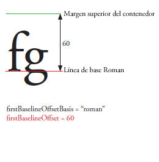

| Paquete | fl.text |
| Clase | public class TLFTextField |
| Herencia | TLFTextField |
| Versión del lenguaje: | ActionScript 3.0 |
| Versión de producto: | Flash CS5 |
| Versiones de motor de ejecución: | Flash Player 10, AIR 1.5 |
Cree un objeto TLFTextField la misma manera que crearía un campo de texto con la clase TextField. Seguidamente, utilice la propiedad textFlow para asignar formato avanzado de las clases TLF. Por ejemplo:
import fl.text.TLFTextField; import flashx.textLayout.formats.TextLayoutFormat; import flashx.textLayout.elements.TextFlow; var myTLFTextField:TLFTextField = new TLFTextField(); addChild(myTLFTextField); myTLFTextField.x = 10; myTLFTextField.y = 10; myTLFTextField.width = 200 myTLFTextField.height = 100; myTLFTextField.text = "This is my text"; var myFormat:TextLayoutFormat = new TextLayoutFormat(); myFormat.textIndent = 8; myFormat.color = 0x336633; myFormat.fontFamily = "Arial, Helvetica, _sans"; myFormat.fontSize = 24; var myTextFlow:TextFlow = myTLFTextField.textFlow; myTextFlow.hostFormat = myFormat; myTextFlow.flowComposer.updateAllControllers();
Elementos de API relacionados
 Ocultar propiedades públicas heredadas
Ocultar propiedades públicas heredadas Mostrar propiedades públicas heredadas
Mostrar propiedades públicas heredadas| Propiedad | Definido por | ||
|---|---|---|---|
 | accessibilityImplementation : AccessibilityImplementation
La implementación actual de accesibilidad (AccessibilityImplementation) para esta instancia de InteractiveObject. | InteractiveObject | |
| accessibilityProperties : AccessibilityProperties
Las opciones de accesibilidad actuales para este objeto de visualización. | DisplayObject | |
| alpha : Number
Indica el valor de transparencia alfa del objeto especificado. | DisplayObject | |
| alwaysShowSelection : Boolean
Cuando se establece como true y el campo de texto no está seleccionado, Flash Player resalta la selección del campo de texto en color azul claro. | TLFTextField | ||
| antiAliasType : String
Tipo de suavizado que se utiliza en este campo de texto. | TLFTextField | ||
| autoSize : String
Controla la asignación de tamaño y alineación automáticas de los campos de texto. | TLFTextField | ||
| background : Boolean
Especifica si el campo de texto tiene relleno de fondo. | TLFTextField | ||
| backgroundAlpha : Number
Especifica el valor alfa del fondo del campo de texto. | TLFTextField | ||
| backgroundColor : uint
Especifica el color del fondo del campo de texto. | TLFTextField | ||
| blendMode : String
Un valor de la clase BlendMode que especifica el modo de mezcla que debe utilizarse. | DisplayObject | |
| blendShader : Shader [solo escritura]
Define un sombreado para utilizarlo en la mezcla del primer plano y del fondo. | DisplayObject | |
| blockProgression : Object
Especifica una progresión vertical u horizontal de la línea de ubicación de los archivos. | TLFTextField | ||
| border : Boolean
Especifica si el campo de texto tiene un borde. | TLFTextField | ||
| borderAlpha : Number
Especifica el valor alfa del borde. | TLFTextField | ||
| borderColor : uint
Especifica el color del borde del campo de texto. | TLFTextField | ||
| borderWidth : Number
Especifica la anchura del borde. | TLFTextField | ||
| bottomScrollV : int [solo lectura]
Un entero (índice basado en uno) que indica la última línea visible en el campo de texto especificado. | TLFTextField | ||
| buttonMode : Boolean
Especifica el modo de botón de este elemento sprite. | Sprite | |
| cacheAsBitmap : Boolean
Si se define como true, los motores de ejecución de Flash dejan en caché una representación interna de mapa de bits del objeto de visualización. | DisplayObject | |
| cacheAsBitmapMatrix : Matrix
Si su valor no es null, este objeto Matrix define cómo un objeto de visualización se procesa cuando cacheAsBitmap se define como true. | DisplayObject | |
| caretIndex : int [solo lectura]
El índice de la posición del punto de inserción (intercalación). | TLFTextField | ||
| columnCount : Object
Número de las columnas de texto (adopta el valor predeterminado si es undefined durante el proceso). | TLFTextField | ||
| columnGap : Object
Especifica la cantidad de espacio de medianil, en píxeles, para dejar entre las columnas (adapta el valor predeterminado si es undefined durante el proceso). | TLFTextField | ||
| columnWidth : Object
Ancho de columna en píxeles (adopta el valor predeterminado si es undefined durante el proceso). | TLFTextField | ||
| condenseWhite : Boolean
Un valor booleano que especifica si se eliminarán los espacios en blanco adicionales (espacios, saltos de línea, etc.) en el campo de texto con texto HTML o el marcado TLF. | TLFTextField | ||
| constructor : Object
Una referencia a la clase de objeto o función constructora para una instancia de objeto determinada. | Object | |
| contextMenu : NativeMenu
Especifica el menú contextual asociado a este objeto. | InteractiveObject | |
| defaultTextFormat : flash.text:TextFormat
Especifica el formato aplicado al texto nuevo insertado, por ejemplo, texto introducido por un usuario o insertado mediante el método replaceSelectedText(). | TLFTextField | ||
| direction : String
Especifica la incorporación bidireccional predeterminada del texto del bloque de texto. | TLFTextField | ||
| displayAsPassword : Boolean
Especifica si el campo de texto es de contraseña. | TLFTextField | ||
| doubleClickEnabled : Boolean
Especifica si este objeto recibe eventos doubleClick. | InteractiveObject | |
| dropTarget : DisplayObject [solo lectura]
Especifica el objeto de visualización sobre el que se está arrastrando el elemento sprite o sobre el que se ha colocado el elemento sprite. | Sprite | |
| embedFonts : Boolean
Especifica si representar utilizando contornos de fuentes incorporadas. | TLFTextField | ||
| filters : Array
Conjunto indexado que contiene todos los objetos de filtro actualmente asociados con el objeto de visualización. | DisplayObject | |
| firstBaselineOffset : Object
Especifica la posición de línea de base de la primera línea en el contenedor. | TLFTextField | ||
| focusRect : Object
Especifica si este objeto muestra un rectángulo de selección. | InteractiveObject | |
| graphics : Graphics [solo lectura]
Especifica el objeto Graphics que pertenece a este elemento sprite, donde pueden ejecutarse comandos de dibujo vectorial. | Sprite | |
| gridFitType : String
Tipo de ajuste de cuadrícula que se utiliza en este campo de texto. | TLFTextField | ||
| height : Number
Indica la altura del objeto de visualización, expresada en píxeles. | DisplayObject | |
| hitArea : Sprite
Designa otro elemento sprite para que actúe como área activa de un elemento sprite. | Sprite | |
| htmlText : String
Contiene la representación HTML del contenido del campo de texto. | TLFTextField | ||
| length : int [solo lectura]
El número de caracteres de un campo de texto. | TLFTextField | ||
| loaderInfo : LoaderInfo [solo lectura]
Devuelve un objeto LoaderInfo que contiene información sobre la carga del archivo al que pertenece este objeto de visualización. | DisplayObject | |
| mask : DisplayObject
El objeto de visualización que origina la llamada se enmascara mediante el objeto mask especificado. | DisplayObject | |
| maxChars : int
El número máximo de caracteres que puede incluir el campo de texto, tal y como los ha introducido el usuario. | TLFTextField | ||
| maxScrollH : int [solo lectura]
Valor máximo de scrollH. | TLFTextField | ||
| maxScrollV : int [solo lectura]
Valor máximo de scrollV. | TLFTextField | ||
| metaData : Object
Obtiene el objeto de metadatos de la instancia de DisplayObject si los metadatos se almacenaron con la instancia de este objeto DisplayObject en el archivo SWF a través de una etiqueta PlaceObject4. | DisplayObject | |
| mouseChildren : Boolean
Determina si los elementos secundarios del objeto están activados para acciones de ratón o de dispositivo de entrada de usuario. | DisplayObjectContainer | |
| mouseEnabled : Boolean
Especifica si este objeto recibe la entrada del ratón, la entrada del usuario o mensajes. | InteractiveObject | |
| mouseWheelEnabled : Boolean
Valor booleano que indica si Flash Player desplazará automáticamente campos de texto multilínea cuando el usuario haga clic en un campo de texto y gire la rueda del ratón. | TLFTextField | ||
| mouseX : Number [solo lectura]
Indica la coordenada x de la posición del ratón o del dispositivo de entrada del usuario, en píxeles. | DisplayObject | |
| mouseY : Number [solo lectura]
Indica la coordenada y de la posición del ratón o del dispositivo de entrada del usuario, en píxeles. | DisplayObject | |
| multiline : Boolean
Indica si el campo de texto consta de varias líneas. | TLFTextField | ||
| name : String
Indica el nombre de instancia de DisplayObject. | DisplayObject | |
| needsSoftKeyboard : Boolean
Especifica si un teclado virtual (teclado en pantalla) se debe mostrar cuando esta instancia de InteractiveObject recibe la selección. | InteractiveObject | |
| numChildren : int [solo lectura]
Devuelve el número de elementos secundarios de este objeto. | DisplayObjectContainer | |
| numLines : int [solo lectura]
Define el número de líneas de texto de un campo de varias líneas. | TLFTextField | ||
| opaqueBackground : Object
Especifica si el objeto de visualización es opaco con un determinado color de fondo. | DisplayObject | |
| paddingBottom : Object
Margen interior inferior en píxeles (adopta el valor predeterminado si es undefined durante el proceso). | TLFTextField | ||
| paddingLeft : Object
Margen interior izquierdo en píxeles (adopta el valor predeterminado si es undefined durante el proceso). | TLFTextField | ||
| paddingRight : Object
Margen interior derecho en píxeles (adopta el valor predeterminado si es undefined durante el proceso). | TLFTextField | ||
| paddingTop : Object
Margen interior superior en píxeles (adopta el valor predeterminado si es undefined durante el proceso). | TLFTextField | ||
| parent : DisplayObjectContainer [solo lectura]
Indica el objeto DisplayObjectContainer que contiene este objeto de visualización. | DisplayObject | |
| pixelMaxScrollV : int [solo lectura]
Valor máximo de pixelScrollV. | TLFTextField | ||
| pixelScrollV : int
La posición vertical del texto de un campo de texto, en píxeles, a diferencia de scrollV, que se mide en líneas. | TLFTextField | ||
| restrict : String
Indica el conjunto de caracteres que los usuarios pueden introducir en el campo de texto. | TLFTextField | ||
| root : DisplayObject [solo lectura]
Para un objeto de visualización en un archivo SWF cargado, la propiedad root es el objeto de visualización de nivel más alto en la parte de la estructura de árbol de la lista de visualización representada por dicho archivo SWF. | DisplayObject | |
| rotation : Number
Indica el giro de la instancia de DisplayObject, expresado en grados, con respecto a su orientación original. | DisplayObject | |
| rotationX : Number
Indica la rotación del eje x de la instancia de DisplayObject, en grados, desde su orientación original relativa al contenedor principal 3D. | DisplayObject | |
| rotationY : Number
Indica la rotación del eje y de la instancia de DisplayObject, en grados, desde su orientación original relativa al contenedor principal 3D. | DisplayObject | |
| rotationZ : Number
Indica la rotación del eje z de la instancia de DisplayObject, en grados, desde su orientación original relativa al contenedor principal 3D. | DisplayObject | |
| scale9Grid : Rectangle
La cuadrícula de escala aplicada actualmente. | DisplayObject | |
| scaleX : Number
Indica la escala horizontal (percentage) del objeto aplicada desde el punto de registro. | DisplayObject | |
| scaleY : Number
Indica la escala vertical (percentage) de un objeto aplicada desde el punto de registro del objeto. | DisplayObject | |
| scaleZ : Number
Indica la escala de profundidad (porcentaje) de un objeto aplicada desde el punto de registro del objeto. | DisplayObject | |
| scrollH : int
La posición de desplazamiento horizontal actual. | TLFTextField | ||
| scrollRect : Rectangle
Los límites del rectángulo de desplazamiento del objeto de visualización. | DisplayObject | |
| scrollV : int
La posición vertical del texto de un campo de texto. | TLFTextField | ||
| selectable : Boolean
Valor booleano que indica si el campo de texto puede seleccionarse. | TLFTextField | ||
| selectionBeginIndex : int [solo lectura]
El valor de índice basado en cero del primer carácter de la selección actual. | TLFTextField | ||
| selectionEndIndex : int [solo lectura]
El valor de índice basado en cero del último carácter de la selección actual. | TLFTextField | ||
| sharpness : Number
La nitidez no se aplica a campos de texto TLF. | TLFTextField | ||
| softKeyboard : String
Controla la apariencia del teclado virtual. | InteractiveObject | |
| softKeyboardInputAreaOfInterest : Rectangle
Define el área que debe permanecer en pantalla cuando se muestra un teclado virtual (no disponible en iOS). | InteractiveObject | |
| soundTransform : flash.media:SoundTransform
Controla el sonido dentro de este elemento sprite. | Sprite | |
| stage : Stage [solo lectura]
El escenario del objeto de visualización. | DisplayObject | |
| styleSheet : StyleSheet
Hojas de estilos para el campo de texto TLF. | TLFTextField | ||
| tabChildren : Boolean
Determina si los elementos secundarios del objeto están habilitados para tabulación. | DisplayObjectContainer | |
| tabEnabled : Boolean
Especifica si este objeto está en el orden de tabulación. | InteractiveObject | |
| tabIndex : int
Especifica el orden de tabulación de los objetos de un archivo SWF. | InteractiveObject | |
| text : String
Una cadena que es el texto actual del campo de texto. | TLFTextField | ||
| textColor : uint
El color del texto de un campo de texto, expresado en formato hexadecimal. | TLFTextField | ||
| textFlow : flashx.textLayout.elements:TextFlow
Utilice esta propiedad para asignar formato de las clases TLF del paquete flashx en la instancia de TLFTextField. | TLFTextField | ||
| textHeight : Number [solo lectura]
La altura del texto, expresada en píxeles. | TLFTextField | ||
| textSnapshot : flash.text:TextSnapshot [solo lectura]
Devuelve un objeto TextSnapshot para esta instancia de DisplayObjectContainer. | DisplayObjectContainer | |
| textWidth : Number [solo lectura]
La anchura del texto, expresada en píxeles. | TLFTextField | ||
| thickness : Number
La propiedad thickness no se aplica al campo de texto TLF. | TLFTextField | ||
| tlfMarkup : String
Establece u obtiene el marcado TLF del texto en el campo de texto TLF. | TLFTextField | ||
| transform : flash.geom:Transform
Objeto con propiedades pertenecientes a una matriz, transformación de color y límites de píxel de un objeto de visualización. | DisplayObject | |
| type : String
Tipo del campo de texto. | TLFTextField | ||
| useHandCursor : Boolean
Valor booleano que indica si debe aparecer la mano que señala (cursor de mano) cuando el puntero pasa por encima de un elemento sprite en el que la propiedad buttonMode se ha definido con el valor true. | Sprite | |
| useRichTextClipboard : Boolean
Especifica si se copia el formato del texto junto con el texto en el portapapeles. | TLFTextField | ||
| verticalAlign : String
Alineación vertical o la justificación (adopta el valor predeterminado si adopta es durante el proceso). | TLFTextField | ||
| visible : Boolean
Indica si el objeto de visualización es visible. | DisplayObject | |
| width : Number
Indica la anchura del objeto de visualización, expresada en píxeles. | DisplayObject | |
| wordWrap : Boolean
Valor booleano que indica si el campo de texto tiene ajuste de texto. | TLFTextField | ||
| x : Number
Indica la coordenada x de la instancia de DisplayObject en relación a las coordenadas locales del DisplayObjectContainer principal. | DisplayObject | |
| y : Number
Indica la coordenada y de la instancia de DisplayObject en relación a las coordenadas locales del DisplayObjectContainer principal. | DisplayObject | |
| z : Number
Indica la posición de la coordenada z en el eje z de la instancia de DisplayObject relativa al contenedor principal 3D. | DisplayObject | |
| Método | Definido por | ||
|---|---|---|---|
Constructor para objetos TLFTextField. | TLFTextField | ||
|
Añade una instancia secundaria de DisplayObject a esta instancia de DisplayObjectContainer. | DisplayObjectContainer | |
|
Añade una instancia secundaria de DisplayObject a esta instancia de DisplayObjectContainer. | DisplayObjectContainer | |
| addEventListener(type:String, listener:Function, useCapture:Boolean = false, priority:int = 0, useWeakReference:Boolean = false):void
Registra un objeto de detector de eventos con un objeto EventDispatcher, de modo que el detector reciba la notificación de un evento. | EventDispatcher | |
Añade la cadena especifica por el parámetro newText al final del texto del campo de texto. | TLFTextField | ||
|
Indica si las restricciones de seguridad provocarían la omisión de objetos de visualización de la lista devuelta al llamar al método DisplayObjectContainer.getObjectsUnderPoint() con el punto point especificado. | DisplayObjectContainer | |
|
Determina si el objeto de visualización especificado es un elemento secundario de la instancia de DisplayObjectContainer o la propia instancia. | DisplayObjectContainer | |
|
Distribuye un evento en el flujo del evento. | EventDispatcher | |
|
Devuelve un rectángulo que define el área del objeto de visualización relativo al sistema de coordenadas del objeto targetCoordinateSpace. | DisplayObject | |
Devuelve un rectángulo como recuadro de delimitación del carácter. | TLFTextField | ||
Devuelve un valor de índice basado en cero del carácter en el punto especificado por los parámetros x e y. | TLFTextField | ||
|
Devuelve la instancia del objeto de visualización secundario que sale del índice especificado. | DisplayObjectContainer | |
|
Devuelve el objeto de visualización secundario que sale con el nombre especificado. | DisplayObjectContainer | |
|
Devuelve la posición de índice de una instancia secundaria de DisplayObject. | DisplayObjectContainer | |
Dado un índice del carácter, devuelve el índice del primer carácter del mismo párrafo. | TLFTextField | ||
Devuelve una referencia DisplayObject para el id dado, ya que se ha añadido una imagen o un archivo SWF a un campo de texto con formato HTML mediante la etiqueta <img>. | TLFTextField | ||
Devuelve un valor de índice basado en cero de la línea en el punto especificado por los parámetros x e y. | TLFTextField | ||
Devuelve un valor de índice basado en cero de la línea que contiene el carácter especificado por el parámetro | TLFTextField | ||
Devuelve el número de caracteres de una línea de texto específica. | TLFTextField | ||
Devuelve información de medidas sobre una línea de texto dada. | TLFTextField | ||
Devuelve el índice de carácter del primer carácter de la línea especificada por el parámetro lineIndex. | TLFTextField | ||
Devuelve el texto de la línea especificada por el parámetro lineIndex. | TLFTextField | ||
|
Devuelve un conjunto de objetos que quedan bajo el punto especificado y son elementos secundarios (o terciarios, etc.) de esta instancia de DisplayObjectContainer. | DisplayObjectContainer | |
Dado un índice de carácter, devuelve la longitud del párrafo que contiene dicho carácter. | TLFTextField | ||
|
Devuelve un rectángulo que define el límite del objeto de visualización, basado en el sistema de coordenadas definido por el parámetro targetCoordinateSpace, excluyendo los trazos en las formas. | DisplayObject | |
Devuelve un objeto TextFormat que contiene información de formato para el rango de texto especificado por los parámetros beginIndex y endIndex. | TLFTextField | ||
|
Convierte el objeto point de las coordenadas del escenario (globales) en las coordenadas del objeto de visualización (locales). | DisplayObject | |
|
Convierte un punto bidimensional de las coordenadas (globales) del escenario en coordenadas (locales) de un objeto tridimensional. | DisplayObject | |
|
Comprueba si el objeto EventDispatcher tiene detectores registrados para un tipo concreto de evento. | EventDispatcher | |
|
Indica si un objeto tiene definida una propiedad especificada. | Object | |
|
Calcula el cuadro delimitador del objeto de visualización para ver si se solapa o corta con el cuadro delimitador del objeto de visualización obj. | DisplayObject | |
|
Evalúa el objeto de visualización para comprobar si se solapa o presenta un punto de intersección con el punto especificado por los parámetros x e y. | DisplayObject | |
Devuelve true si hay disponible una fuente incorporada con las propiedades fontName y fontStyle especificadas, donde Font.fontType sea flash.text.FontType.EMBEDDED_CFF. | TLFTextField | ||
|
Indica si hay una instancia de la clase Object en la cadena de prototipo del objeto especificado como parámetro. | Object | |
|
Convierte un punto tridimensional de las coordenadas (locales) del objeto de visualización tridimensional en un punto bidimensional en las coordenadas (globales) del escenario. | DisplayObject | |
|
Convierte el objeto point de coordenadas del objeto de visualización (locales) en coordenadas del escenario (globales). | DisplayObject | |
|
Indica si existe la propiedad especificada y si es enumerable. | Object | |
|
Elimina la instancia child de DisplayObject especificada de la lista de elementos secundarios de la instancia de DisplayObjectContainer. | DisplayObjectContainer | |
|
Elimina una instancia de DisplayObject secundaria de la posición de índice especificada en la lista de elementos secundarios de DisplayObjectContainer. | DisplayObjectContainer | |
|
Elimina todas las instancias child de DisplayObject especificadas de la lista de elementos secundarios de la instancia de DisplayObjectContainer. | DisplayObjectContainer | |
|
Elimina un detector del objeto EventDispatcher. | EventDispatcher | |
Reemplaza la selección actual por el contenido del parámetro del valor. | TLFTextField | ||
Reemplaza el rango de caracteres especificados por los parámetros beginIndex y endIndex con el contenido del parámetro newText. | TLFTextField | ||
|
Muestra un teclado virtual. | InteractiveObject | |
|
Cambia la posición de un elemento secundario existente en el contendor de objeto de visualización. | DisplayObjectContainer | |
|
Establece la disponibilidad de una propiedad dinámica para operaciones de bucle. | Object | |
Establece como seleccionado el texto designado por los valores de índice de los primeros y últimos caracteres, especificados por los parámetros beginIndex y endIndex. | TLFTextField | ||
Aplica el formato de texto especificado por el parámetro format al texto especificado en un campo de texto. | TLFTextField | ||
|
Permite al usuario arrastrar el elemento sprite especificado. | Sprite | |
|
Permite al usuario arrastrar el elemento sprite especificado en un dispositivo táctil. | Sprite | |
|
Se detiene gradualmente la ejecución de línea de tiempo de todos los objetos MovieClip con raíz en este objeto. | DisplayObjectContainer | |
|
Finaliza el método startDrag(). | Sprite | |
|
Finaliza el método startTouchDrag() para su uso con dispositivos táctiles. | Sprite | |
|
Intercambia el orden z (de delante a atrás) de los dos objetos secundarios especificados. | DisplayObjectContainer | |
|
Intercambia el orden z (de delante a atrás) de los objetos secundarios situados en las posiciones de índice especificadas en la lista de elementos secundarios. | DisplayObjectContainer | |
|
Devuelve la representación de cadena de este objeto, con formato según las convenciones específicas de configuración regional. | Object | |
|
Devuelve la representación de cadena del objeto especificado. | Object | |
|
Devuelve el valor simple del objeto especificado. | Object | |
|
Comprueba si hay registrado un detector de eventos con este objeto EventDispatcher o con cualquiera de sus ascendientes para el tipo de evento concreto. | EventDispatcher | |
| Evento | Resumen | Definido por | ||
|---|---|---|---|---|
| [evento broadcast] Se distribuye cuando Flash Player o AIR pasan a estar activos. | EventDispatcher | ||
| Se distribuye cuando un objeto de visualización se añade a la lista de visualización. | DisplayObject | ||
| Se distribuye cuando un objeto de visualización se añade a la lista de visualización del escenario, bien directamente o a través de un subárbol que contiene el objeto de visualización. | DisplayObject | ||
| Se emite tras modificar el valor de un control, a diferencia del evento textInput, que se emite antes de modificar el valor. | TLFTextField | |||
| Se distribuye cuando el usuario selecciona 'Borrar' (o 'Eliminar') en el menú contextual. | InteractiveObject | ||
| Se distribuye cuando un usuario pulsa y suelta el botón principal del dispositivo de señalización sobre el mismo objeto InteractiveObject. | InteractiveObject | ||
| Se distribuye cuando un gesto de usuario activa el menú contextual asociado al objeto interactivo la aplicación de AIR. | InteractiveObject | ||
| Se distribuye cuando el usuario activa la combinación de teclas aceleradoras específica de la plataforma en que se encuentra para copiar elementos, o bien cuando el usuario elige la opción 'Copiar' en el menú contextual. | InteractiveObject | ||
| Se distribuye cuando el usuario activa la combinación de teclas aceleradoras específica de la plataforma en que se encuentra para cortar elementos, o bien cuando el usuario elige la opción 'Cortar' en el menú contextual. | InteractiveObject | ||
| [evento broadcast] Se distribuye cuando Flash Player o de AIR pasan a estar inactivos. | EventDispatcher | ||
| Se distribuye cuando un usuario pulsa y suelta el botón principal de un dispositivo de señalización dos veces en una sucesión rápida sobre el mismo objeto InteractiveObject cuando el indicador doubleClickEnabled de dicho objeto se ha definido como true. | InteractiveObject | ||
| [evento de difusión] Se distribuye cuando la cabeza lectora entra en un nuevo fotograma. | DisplayObject | ||
| [evento de difusión] Se distribuye cuando la cabeza lectora sale del fotograma actual. | DisplayObject | ||
| Se distribuye después de que un objeto de visualización quede seleccionado. | InteractiveObject | ||
| Se distribuye después de que un objeto de visualización deje de estar seleccionado. | InteractiveObject | ||
| [evento de difusión] Se distribuye una vez ejecutados los constructores de los objetos de visualización del fotograma, pero antes de que se ejecuten los scripts de fotograma. | DisplayObject | ||
| Se distribuye cuando el usuario crea un punto de contacto a lo largo del borde de la superficie de toque con una instancia de InteractiveObject (por ejemplo, toque a lo largo del borde de la superficie de toque en el servidor de Siri para Apple TV). Algunos dispositivos también pueden interpretar este contacto como una combinación de varios eventos táctiles. | InteractiveObject | ||
| Se distribuye cuando el usuario presiona dos puntos de contacto en la misma instancia de InteractiveObject en un dispositivo táctil (como, por ejemplo, pulsar y soltar dos dedos sobre un objeto de visualización en un teléfono móvil o en un dispositivo con pantalla táctil). | InteractiveObject | ||
| Se distribuye cuando el usuario mueve un punto de contacto sobre la instancia de InteractiveObject de un dispositivo táctil (como mover los dedos de izquierda a derecha sobre un objeto de visualización en un teléfono móvil o dispositivo con pantalla táctil). | InteractiveObject | ||
| Se distribuye cuando el usuario realiza un gesto de zoom en un punto de contacto con una instancia de InteractiveObject (como, por ejemplo, tocar una pantalla con dos dedos y girarlos sobre un objeto de visualización en un teléfono móvil o en un dispositivo con pantalla táctil). | InteractiveObject | ||
| Se distribuye cuando el usuario realiza un gesto de barrido en un punto de contacto con una instancia de InteractiveObject (como, por ejemplo, tocar una pantalla con tres dedos y, a continuación, moverlos en paralelo sobre un objeto de visualización en un teléfono móvil o en un dispositivo con pantalla táctil). | InteractiveObject | ||
| Se distribuye cuando el usuario crea un punto de contacto con una instancia de InteractiveObject, seguidamente toca un dispositivo táctil (como colocar varios dedos sobre un objeto de visualización para abrir un menú y, a continuación, toca con un dedo para seleccionar un elemento de menú en un teléfono móvil o en un dispositivo con pantalla táctil). | InteractiveObject | ||
| Se distribuye cuando el usuario realiza un gesto de zoom en un punto de contacto con una instancia de InteractiveObject (como, por ejemplo, tocar una pantalla con dos dedos y, a continuación, separarlos rápidamente sobre un objeto de visualización en un teléfono móvil o en un dispositivo con pantalla táctil). | InteractiveObject | ||
| Este evento se distribuye a cualquier cliente app que admite entrada en línea con un IME | InteractiveObject | ||
| Se distribuye cuando el usuario pulsa una tecla. | InteractiveObject | ||
| Se distribuye cuando el usuario intenta cambiar la selección empleando la navegación mediante teclado. | InteractiveObject | ||
| Se distribuye cuando el usuario suelta una tecla. | InteractiveObject | ||
| Se distribuye cuando un usuario hace clic en el hipervínculo de un campo de texto compatible con HTML, donde la URL empieza por "event:". | TLFTextField | |||
| Se distribuye cuando un usuario pulsa y suelta el botón central del dispositivo de señalización sobre el mismo objeto InteractiveObject. | InteractiveObject | ||
| Se distribuye cuando el usuario pulsa el botón central del dispositivo señalador sobre una instancia de InteractiveObject. | InteractiveObject | ||
| Se distribuye cuando el usuario suelta el botón del dispositivo señalador sobre una instancia de InteractiveObject. | InteractiveObject | ||
| Se distribuye cuando el usuario pulsa el botón del dispositivo señalador sobre una instancia de InteractiveObject. | InteractiveObject | ||
| Se distribuye cuando el usuario intenta cambiar la selección empleando un dispositivo de señalización. | InteractiveObject | ||
| Se distribuye cuando el usuario mueve el dispositivo de señalización mientras éste se encuentra sobre un InteractiveObject. | InteractiveObject | ||
| Se distribuye cuando el usuario mueve un dispositivo de señalización hacia el exterior de una instancia de InteractiveObject. | InteractiveObject | ||
| Se distribuye cuando el usuario mueve un dispositivo de señalización sobre una instancia de InteractiveObject. | InteractiveObject | ||
| Se distribuye cuando el usuario suelta el botón del dispositivo señalador sobre una instancia de InteractiveObject. | InteractiveObject | ||
| Se distribuye cuando se presiona la rueda del ratón sobre una instancia de InteractiveObject. | InteractiveObject | ||
| Distribuido por el objeto InteractiveObject iniciador de arrastre cuando el usuario suelta el botón y finaliza el arrastre. | InteractiveObject | ||
| Distribuido por el objeto InteractiveObject de destino cuando un objeto arrastrado se coloca sobre el objeto y la colocación se acepta con una llamada a DragManager.acceptDragDrop(). | InteractiveObject | ||
| Distribuido por un objeto InteractiveObject cuando la acción de arrastre entra en sus límites. | InteractiveObject | ||
| Distribuido por un objeto InteractiveObject cuando la acción de arrastre se sale de los límites. | InteractiveObject | ||
| Distribuido continuamente por un objeto InteractiveObject mientras la operación de arrastre se mantiene dentro de sus límites. | InteractiveObject | ||
| Distribuido al comienzo de una operación de arrastre por el objeto InteractiveObject especificado como iniciador de arrastre en la llamada a DragManager.doDrag(). | InteractiveObject | ||
| Distribuido durante una operación de arrastre por el objeto InteractiveObject especificado como iniciador de arrastre en la llamada a DragManager.doDrag(). | InteractiveObject | ||
| Se distribuye cuando el usuario activa la combinación de teclas aceleradoras específica de la plataforma en que se encuentra para pegar elementos, o bien cuando el usuario elige la opción 'Pegar' en el menú contextual. | InteractiveObject | ||
| Se distribuye cuando el usuario baja un lápiz stylus activo más allá del umbral de detección de proximidad de la pantalla. | InteractiveObject | ||
| Se distribuye cuando el usuario levanta un lápiz stylus activo por encima del umbral de detección de proximidad de la pantalla. | InteractiveObject | ||
| Se distribuye cuando el usuario pasa un lápiz stylus activo por encima de la pantalla sin salir del umbral de detección de proximidad. | InteractiveObject | ||
| Se distribuye cuando el usuario quita un lápiz stylus activo de encima de este objeto InteractiveObject permaneciendo dentro del umbral de detección de proximidad de la pantalla. | InteractiveObject | ||
| Se distribuye cuando el usuario pasa un lápiz stylus activo directamente por encima de este objeto InteractiveObject permaneciendo dentro del umbral de detección de proximidad de la pantalla. | InteractiveObject | ||
| Se distribuye cuando el usuario quita un lápiz stylus activo de encima de este objeto InteractiveObject y sus elementos secundarios permaneciendo dentro del umbral de detección de proximidad de la pantalla. | InteractiveObject | ||
| Se distribuye cuando el usuario pasa un lápiz stylus activo por encima de este objeto InteractiveObject desde fuera del árbol de descendientes del objeto en la lista de visualización (permaneciendo dentro del umbral de detección de proximidad de la pantalla). | InteractiveObject | ||
| Se distribuye cuando el usuario suelta el botón del dispositivo señalador por primera vez después de que el usuario presiona el botón sobre una instancia de InteractiveObject y, a continuación, mueve el dispositivo de señalización fuera de la instancia de InteractiveObject. | InteractiveObject | ||
| Se distribuye cuando un objeto de visualización se va a eliminar de la lista de visualización. | DisplayObject | ||
| Se distribuye cuando un objeto de visualización se va a eliminar de la lista de visualización, bien directamente o a través de la eliminación de un subárbol que contiene el objeto de visualización. | DisplayObject | ||
| [evento de difusión] Se distribuye cuando la lista de visualización se va a actualizar y representar. | DisplayObject | ||
| Se distribuye cuando un usuario pulsa y suelta el botón derecho del dispositivo de señalización sobre el mismo objeto InteractiveObject. | InteractiveObject | ||
| Se distribuye cuando el usuario pulsa el botón del dispositivo señalador sobre una instancia de InteractiveObject. | InteractiveObject | ||
| Se distribuye cuando el usuario suelta el botón del dispositivo señalador sobre una instancia de InteractiveObject. | InteractiveObject | ||
| Se distribuye cuando el usuario mueve un dispositivo de señalización hacia el exterior de una instancia de InteractiveObject. | InteractiveObject | ||
| Se distribuye cuando el usuario mueve un dispositivo de señalización sobre una instancia de InteractiveObject. | InteractiveObject | ||
| Distribuido por un objeto TextField después de que el usuario se desplace. | TLFTextField | |||
| Se distribuye cuando el usuario activa la combinación de teclas aceleradoras específica de la plataforma en que se encuentra para seleccionar todos los elementos, o bien cuando el usuario elige la opción 'Seleccionar todo' en el menú contextual. | InteractiveObject | ||
| Se distribuye inmediatamente una vez mostrado el teclado en pantalla. | InteractiveObject | ||
| Se distribuye inmediatamente antes de que se muestre el teclado en pantalla. | InteractiveObject | ||
| Se distribuye inmediatamente una vez oculto el teclado en pantalla. | InteractiveObject | ||
| Se distribuye cuando cambia el valor del indicador tabChildren del objeto. | InteractiveObject | ||
| Se distribuye cuando cambia el indicador tabEnabled del objeto. | InteractiveObject | ||
| Se distribuye cuando cambia el valor de la propiedad tabIndex del objeto. | InteractiveObject | ||
| Flash Player distribuye el evento textInput cuando un usuario escribe uno o varios caracteres de texto. | TLFTextField | |||
| Se distribuye cuando el usuario toca por primera vez un dispositivo táctil (por ejemplo, toca un teléfono móvil o dispositivo con pantalla táctil con un dedo). | InteractiveObject | ||
| Se distribuye cuando el usuario elimina el contacto con un dispositivo táctil (como levantar un dedo de un teléfono móvil o dispositivo con pantalla táctil). | InteractiveObject | ||
| Se distribuye cuando el usuario toca el dispositivo y se distribuye constantemente hasta que desaparece el punto de contacto. | InteractiveObject | ||
| Se distribuye cuando el usuario retira el punto de contacto de una instancia de InteractiveObject en un dispositivo táctil (como arrastrar un dedo desde un objeto de visualización a otro en un teléfono móvil o en un dispositivo con pantalla táctil). | InteractiveObject | ||
| Se distribuye cuando el usuario mueve el punto de contacto sobre una instancia de InteractiveObject en un dispositivo táctil (como arrastrar un dedo desde un punto fuera de un objeto de visualización en un punto sobre un objeto de visualización en un teléfono móvil o en un dispositivo con pantalla táctil). | InteractiveObject | ||
| Se distribuye cuando el usuario retira el punto de contacto de una instancia de InteractiveObject en un dispositivo táctil (como arrastrar un dedo desde un objeto de visualización a un punto fuera del objeto de visualización en un teléfono móvil o en un dispositivo con pantalla táctil). | InteractiveObject | ||
| Se distribuye cuando el usuario mueve el punto de contacto sobre una instancia de InteractiveObject en un dispositivo táctil (como arrastrar un dedo desde un punto fuera de un objeto de visualización en un punto sobre un objeto de visualización en un teléfono móvil o en un dispositivo con pantalla táctil). | InteractiveObject | ||
| Se distribuye cuando el usuario levanta el punto de contacto en la misma instancia de InteractiveObject en la que se inició el contacto en un dispositivo táctil (como, por ejemplo, pulsar y soltar un dedo desde un único punto sobre un objeto de visualización en un teléfono móvil o en un dispositivo con pantalla táctil). | InteractiveObject | ||
alwaysShowSelection | propiedad |
alwaysShowSelection:Boolean| Versión del lenguaje: | ActionScript 3.0 |
| Versiones de motor de ejecución: | Flash Player 10, AIR 1.5 |
Cuando se establece como true y el campo de texto no está seleccionado, Flash Player resalta la selección del campo de texto en color azul claro. Cuando se define como false y el campo de texto no está seleccionado, Flash Player no resalta la selección del campo de texto.
Ejemplo:
package
{
import flash.display.Sprite;
import fl.text.TLFTextField;
import flash.text.TextFieldType;
public class TLFTextField_alwaysShowSelection extends Sprite
{
public function TLFTextField_alwaysShowSelection()
{
var label1:TLFTextField = createTLFTextField(0, 20, 200, 20);
label1.text = "This text is selected.";
label1.setSelection(0, 9);
label1.alwaysShowSelection = true;
var label2:TLFTextField = createTLFTextField(0, 50, 200, 20);
label2.text = "Drag to select some of this text.";
}
private function createTLFTextField(x:Number, y:Number, width:Number, height:Number):TLFTextField
{
var result:TLFTextField = new TLFTextField();
result.x = x;
result.y = y;
result.width = width;
result.height = height;
addChild(result);
return result;
}
}
}
El valor predeterminado es false.
Implementación
public function get alwaysShowSelection():Boolean public function set alwaysShowSelection(value:Boolean):voidElementos de API relacionados
antiAliasType | propiedad |
antiAliasType:String| Versión del lenguaje: | ActionScript 3.0 |
| Versiones de motor de ejecución: | Flash Player 10, AIR 1.5 |
Tipo de suavizado que se utiliza en este campo de texto. Utilice constantes flash.text.AntiAliasType para esta propiedad. Sólo puede controlar este parámetro de configuración si la fuente está incorporada (con la propiedad embedFonts definida como true).
Para definir los valores de esta propiedad, utilice los siguientes valores de cadena:
| Valor de la cadena | Descripción |
|---|---|
flash.text.AntiAliasType.NORMAL | Aplica el suavizado de texto regular. Equivale al tipo de suavizado que utilizaba Flash Player en la versión 7 y anteriores. |
flash.text.AntiAliasType.ADVANCED | Aplica suavizado avanzado, que aumenta la legibilidad del texto. (Esta función pasó a estar disponible en Flash Player 8.) El suavizado avanzado proporciona máxima calidad de representación para las fuentes de tamaño pequeño. Ofrece mejores resultados con aplicaciones que presentan gran cantidad de texto pequeño. No se recomienda utilizarlo con fuentes de más de 48 puntos. |
El valor predeterminado es flash.text.AntiAliasType.NORMAL.
Implementación
public function get antiAliasType():String public function set antiAliasType(value:String):voidElementos de API relacionados
autoSize | propiedad |
autoSize:String| Versión del lenguaje: | ActionScript 3.0 |
| Versiones de motor de ejecución: | Flash Player 10, AIR 1.5 |
Controla la asignación de tamaño y alineación automáticas de los campos de texto. Los valores válidos para las constantes TextFieldAutoSize son: TextFieldAutoSize.NONE (predeterminado), TextFieldAutoSize.LEFT, TextFieldAutoSize.RIGHT y TextFieldAutoSize.CENTER.
Si autoSize se define como TextFieldAutoSize.NONE (predeterminado), no se produce cambio de tamaño.
Si autoSize se define como TextFieldAutoSize.LEFT, se considerará que el texto está justificado a la izquierda, lo que significa que el lado izquierdo del campo de texto permanecerá fijo y el cambio de tamaño de un campo de texto de una sola línea tendrá lugar en el lado derecho. Si el texto incluye un salto de línea (por ejemplo, "\n" o "\r"), también se cambiará el tamaño del lado inferior para dar cabida a la siguiente línea de texto. Si wordWrap también se ha definido como true, sólo se cambiará el tamaño del lado inferior del campo de texto, mientras que el lado derecho permanecerá fijo.
Si autoSize se define como TextFieldAutoSize.RIGHT, se considerará que el texto está justificado a la izquierda, lo que significa que el lado derecho del campo de texto permanecerá fijo y el cambio de tamaño de un campo de texto de una sola línea tendrá lugar en el lado izquierdo. Si el texto incluye un salto de línea (por ejemplo, "\n" o "\r"), también se cambiará el tamaño del lado inferior para dar cabida a la siguiente línea de texto. Si wordWrap también se ha definido como true, sólo se cambiará el tamaño del lado inferior del campo de texto, mientras que el lado izquierdo permanecerá fijo.
Si autoSize se define como TextFieldAutoSize.CENTER, se considerará que el texto está centrado, lo que significa que el cambio de tamaño de un campo de texto de una sola línea se distribuirá por igual entre los márgenes derecho e izquierdo. Si el texto incluye un salto de línea (por ejemplo, "\n" o "\r"), también se cambiará el tamaño del lado inferior para dar cabida a la siguiente línea de texto. Si wordWrap también se define como true, sólo se cambiará el tamaño del lado inferior del campo de texto, mientras que los lados izquierdo y derecho permanecerán fijos.
Implementación
public function get autoSize():String public function set autoSize(value:String):voidEmite
ArgumentError — La cadena autoSize especificada no es un miembro de flash.text.TextFieldAutoSize.
|
Elementos de API relacionados
background | propiedad |
background:Boolean| Versión del lenguaje: | ActionScript 3.0 |
| Versiones de motor de ejecución: | Flash Player 10, AIR 1.5 |
Especifica si el campo de texto tiene relleno de fondo. Si es true, el campo de texto tiene relleno de fondo. Si es false, el campo de texto no tiene relleno de fondo. Utilice la propiedad backgroundColor para establecer el color de fondo de un campo de texto.
El valor predeterminado es false.
Implementación
public function get background():Boolean public function set background(value:Boolean):voidElementos de API relacionados
backgroundAlpha | propiedad |
backgroundAlpha:Number| Versión del lenguaje: | ActionScript 3.0 |
| Versiones de motor de ejecución: | Flash Player 10, AIR 1.5 |
Especifica el valor alfa del fondo del campo de texto. El valor alfa del fondo se puede definir en cualquier valor entre 0 (invisible) y 1 (sólido). Esta propiedad puede recuperarse o establecerse aunque no haya actualmente ningún fondo, pero el efecto alfa sólo estará visible si el campo de texto tiene la propiedad background definida como true.
El valor predeterminado es 1.0.
Implementación
public function get backgroundAlpha():Number public function set backgroundAlpha(value:Number):voidElementos de API relacionados
backgroundColor | propiedad |
backgroundColor:uint| Versión del lenguaje: | ActionScript 3.0 |
| Versiones de motor de ejecución: | Flash Player 10, AIR 1.5 |
Especifica el color del fondo del campo de texto. Esta propiedad puede recuperarse o establecerse aunque no haya actualmente ningún fondo, pero el color sólo estará visible si el campo de texto tiene la propiedad background definida como true.
El valor predeterminado es 0xFFFFFF (white).
Implementación
public function get backgroundColor():uint public function set backgroundColor(value:uint):voidElementos de API relacionados
blockProgression | propiedad |
blockProgression:Object| Versión del lenguaje: | ActionScript 3.0 |
| Versión de producto: | Flash CS5 |
| Versiones de motor de ejecución: | Flash Player 10, AIR 1.5 |
Especifica una progresión vertical u horizontal de la línea de ubicación de los archivos. Las líneas se colocan bien de arriba abajo (BlockProgression.TB, utilizado para texto horizontal) o de derecha a izquierda (BlockProgression.RL, utilizado para texto vertical).
Los valores aceptados son flashx.textLayout.formats.BlockProgression.RL, flashx.textLayout.formats.BlockProgression.TB, flashx.textLayout.formats.FormatValue.INHERIT.
Si son undefined durante el proceso, esta propiedad heredará su valor de un ascendiente. Si ningún ascendiente ha establecido esta propiedad, tendrá un valor de TB.
El valor predeterminado es undefined (indicates not set).
Implementación
public function get blockProgression():Object public function set blockProgression(value:Object):voidElementos de API relacionados
border | propiedad |
border:Boolean| Versión del lenguaje: | ActionScript 3.0 |
| Versiones de motor de ejecución: | Flash Player 10, AIR 1.5 |
Especifica si el campo de texto tiene un borde. Si es true, especifica si el campo de texto tiene un borde. Si es false, el campo de texto no tiene borde. Utilice la propiedad borderColor para definir el color del borde.
El valor predeterminado es false.
Implementación
public function get border():Boolean public function set border(value:Boolean):voidElementos de API relacionados
borderAlpha | propiedad |
borderAlpha:Number| Versión del lenguaje: | ActionScript 3.0 |
| Versiones de motor de ejecución: | Flash Player 10, AIR 1.5 |
Especifica el valor alfa del borde. El valor alfa del borde se puede definir en cualquier valor entre 0 (invisible) y 1 (sólido). Esta propiedad puede recuperarse o definirse aunque no haya actualmente ningún borde, pero el efecto estará visible si el campo de texto tiene la propiedad border definida como true.
El valor predeterminado es 1.0.
Implementación
public function get borderAlpha():Number public function set borderAlpha(value:Number):voidElementos de API relacionados
borderColor | propiedad |
borderColor:uint| Versión del lenguaje: | ActionScript 3.0 |
| Versiones de motor de ejecución: | Flash Player 10, AIR 1.5 |
Especifica el color del borde del campo de texto. El valor predeterminado es 0x000000 (negro). Esta propiedad puede recuperarse o definirse aunque no haya actualmente ningún borde, pero el color sólo estará visible si el campo de texto tiene la propiedad border definida como true.
Implementación
public function get borderColor():uint public function set borderColor(value:uint):voidElementos de API relacionados
borderWidth | propiedad |
borderWidth:Number| Versión del lenguaje: | ActionScript 3.0 |
| Versiones de motor de ejecución: | Flash Player 10, AIR 1.5 |
Especifica la anchura del borde. La anchura del borde se puede definir en cualquier valor entre 1 y 100. Esta propiedad puede recuperarse o definirse aunque no haya actualmente ningún borde, pero la anchura sólo estará visible si el campo de texto tiene la propiedad border definida como true.
La anchura del borde se tiene en cuenta al calcular la anchura o la altura del campo de texto. Para obtener la altura o la anchura del contenedor de texto sin el borde, reste 2 veces el objeto borderWidth del valor de anchura o altura.
Por ejemplo, txtHeight = tlf.height - (2 tlf.borderwidth);.
El valor predeterminado es 1.
Implementación
public function get borderWidth():Number public function set borderWidth(value:Number):voidElementos de API relacionados
bottomScrollV | propiedad |
bottomScrollV:int [solo lectura] | Versión del lenguaje: | ActionScript 3.0 |
| Versiones de motor de ejecución: | Flash Player 10, AIR 1.5 |
Un entero (índice basado en uno) que indica la última línea visible en el campo de texto especificado. Considere el campo de texto como una ventana en un bloque de texto. La propiedad scrollV es el índice basado en uno de la primera línea visible en la ventana y bottomScroll es la última línea visible en la ventana.
El texto existente entre las líneas indicado por scrollV y bottomScrollV está visible actualmente en el campo de texto.
Implementación
public function get bottomScrollV():intElementos de API relacionados
caretIndex | propiedad |
caretIndex:int [solo lectura] | Versión del lenguaje: | ActionScript 3.0 |
| Versiones de motor de ejecución: | Flash Player 10, AIR 1.5 |
El índice de la posición del punto de inserción (intercalación). Si no se muestra ningún punto de inserción, el valor es la posición en la que estaría el punto de inserción si se recuperase la selección en el campo (normalmente, la última posición del punto de inserción o un valor 0 si el campo no se ha seleccionado nunca).
Los índices de espacio de selección están basados en cero (por ejemplo, la primera posición es 0, la segunda es 1, etc.).
Ejemplo:
package
{
import flash.display.Sprite;
import flash.events.MouseEvent;
import fl.text.TLFTextField;
import flash.text.TextFieldType;
public class TLFTextField_caretIndex extends Sprite
{
public function TLFTextField_caretIndex()
{
var tlf:TLFTextField = createTLFTextField(10, 10, 100, 100);
tlf.wordWrap = true;
tlf.type = TextFieldType.INPUT;
tlf.text = "Click in this text field. Compare the difference between clicking without selecting versus clicking and selecting text.";
tlf.addEventListener(MouseEvent.CLICK, printCursorPosition);
}
private function printCursorPosition(event:MouseEvent):void
{
var tlf:TLFTextField = TLFTextField(event.currentTarget);
trace("caretIndex:", tlf.caretIndex);
trace("selectionBeginIndex:", tlf.selectionBeginIndex);
trace("selectionEndIndex:", tlf.selectionEndIndex);
}
private function createTLFTextField(x:Number, y:Number, width:Number, height:Number):TLFTextField
{
var result:TLFTextField = new TLFTextField();
result.x = x;
result.y = y;
result.width = width;
result.height = height;
addChild(result);
return result;
}
}
}
Implementación
public function get caretIndex():intElementos de API relacionados
columnCount | propiedad |
columnCount:Object| Versión del lenguaje: | ActionScript 3.0 |
| Versiones de motor de ejecución: | Flash Player 10, AIR 1.5 |
Número de las columnas de texto (adopta el valor predeterminado si es undefined durante el proceso). El número de columnas anula el resto de ajustes de columna. El valor es un entero o FormatValue.AUTO si no se especifica nada. Si no se especifica columnCount, se utiliza columnWidth para crear tantas columnas como quepan en el contenedor.
Los valores aceptados como cadena son flashx.textLayout.formats.FormatValue.AUTO, flashx.textLayout.formats.FormatValue.INHERIT y enteros de 1 a 50.
Si es undefined durante la cascada esta propiedad tendrá siempre un valor de AUTO.
El valor predeterminado es undefined (indicates not set).
Implementación
public function get columnCount():Object public function set columnCount(value:Object):voidElementos de API relacionados
columnGap | propiedad |
columnGap:Object| Versión del lenguaje: | ActionScript 3.0 |
| Versiones de motor de ejecución: | Flash Player 10, AIR 1.5 |
Especifica la cantidad de espacio de medianil, en píxeles, para dejar entre las columnas (adapta el valor predeterminado si es undefined durante el proceso).
Los valores aceptados son números que oscilan entre 0 y 1.000, y flashx.textLayout.formats.FormatValue.INHERIT.
Si los valores son undefined durante el proceso, esta propiedad tendrá un valor de 20.
El valor predeterminado es undefined (indicates not set).
Implementación
public function get columnGap():Object public function set columnGap(value:Object):voidElementos de API relacionados
columnWidth | propiedad |
columnWidth:Object| Versión del lenguaje: | ActionScript 3.0 |
| Versión de producto: | Flash CS5 |
| Versiones de motor de ejecución: | Flash Player 10, AIR 1.5 |
Ancho de columna en píxeles (adopta el valor predeterminado si es undefined durante el proceso). Si especifica la anchura de las columnas, pero no el número de ellas, TextLayout creará tantas columnas como permita la anchura, teniendo en cuenta la anchura del propio contenedor y los ajustes de columnGap. El espacio restante se deja tras la última columna. El valor es un número.
Los valores aceptados como cadena son flashx.textLayout.formats.FormatValue.AUTO, flashx.textLayout.formats.FormatValue.INHERIT y números del 0 a 8.000.
Si es undefined durante la cascada esta propiedad tendrá siempre un valor de AUTO.
El valor predeterminado es undefined (indicates not set).
Implementación
public function get columnWidth():Object public function set columnWidth(value:Object):voidElementos de API relacionados
condenseWhite | propiedad |
condenseWhite:Boolean| Versión del lenguaje: | ActionScript 3.0 |
| Versión de producto: | Flash CS5 |
| Versiones de motor de ejecución: | Flash Player 10, AIR 1.5 |
Un valor booleano que especifica si se eliminarán los espacios en blanco adicionales (espacios, saltos de línea, etc.) en el campo de texto con texto HTML o el marcado TLF. El valor predeterminado es false. La propiedad condenseWhite sólo afecta al marcado TLF o al texto definido con la propiedad htmlText, no con la propiedad text. Si define texto con la propiedad text, condenseWhite se omitirá.
Si la propiedad condenseWhite se establece como true, utilice etiquetas HTML estándar, como <br> y <p>, para incluir saltos de línea en el campo de texto.
Defina la propiedad condenseWhite antes de establecer la propiedad htmlText o tlfMarkup.
En el ejemplo siguiente se muestra cómo utilizar la propiedad condenseWhite para eliminar espacio adicional del contenido de tlfMarkup:
import fl.text.TLFTextField; var my_tlf:TLFTextField = new TLFTextField(); my_tlf.autoSize = 'left'; // This line removes white space from tlfMarkup my_tlf.condenseWhite = true; addChild(my_tlf); var my_markup:String = '<TextFlow xmlns="http://ns.adobe.com/textLayout/2008">' + ' <p>' + ' <span>Here is the first span.</span>' + ' \n' + ' <span>And here is the second span.</span>' + ' </p>' + '</TextFlow>'; my_tlf.tlfMarkup = my_markup;
El valor predeterminado es false.
Implementación
public function get condenseWhite():Boolean public function set condenseWhite(value:Boolean):voidElementos de API relacionados
defaultTextFormat | propiedad |
defaultTextFormat:flash.text:TextFormat| Versión del lenguaje: | ActionScript 3.0 |
| Versión de producto: | Flash CS5 |
| Versiones de motor de ejecución: | Flash Player 10, AIR 1.5 |
Especifica el formato aplicado al texto nuevo insertado, por ejemplo, texto introducido por un usuario o insertado mediante el método replaceSelectedText().
Implementación
public function get defaultTextFormat():flash.text:TextFormat public function set defaultTextFormat(value:flash.text:TextFormat):voidElementos de API relacionados
direction | propiedad |
direction:String| Versión del lenguaje: | ActionScript 3.0 |
| Versión de producto: | Flash CS5 |
| Versiones de motor de ejecución: | Flash Player 10, AIR 1.5 |
Especifica la incorporación bidireccional predeterminada del texto del bloque de texto. Orden de lectura de izquierda a derecha, al estilo occidental, o de derecha a izquierda, al estilo de lenguas como el árabe o el hebreo. Esta propiedad también afecta a la dirección de la columna cuando se aplica a todo el contenedor. Las columnas pueden estar orientadas de izquierda a derecha o de derecha a izquierda, igual que el texto. A continuación se muestran algunos ejemplos:

Los valores aceptados son flashx.textLayout.formats.Direction.LTR, flashx.textLayout.formats.Direction.RTL, flashx.textLayout.formats.FormatValue.INHERIT.
Si son undefined durante el proceso, esta propiedad heredará su valor de un ascendiente. Si ningún ascendiente ha establecido esta propiedad, tendrá un valor de LTR.
El valor predeterminado es undefined (indicates not set).
Implementación
public function get direction():String public function set direction(value:String):voidElementos de API relacionados
displayAsPassword | propiedad |
displayAsPassword:Boolean| Versión del lenguaje: | ActionScript 3.0 |
| Versión de producto: | Flash CS5 |
| Versiones de motor de ejecución: | Flash Player 10, AIR 1.5 |
Especifica si el campo de texto es de contraseña. Si el valor de esta propiedad es true, el campo de texto se trata como una contraseña y oculta la entrada de caracteres empleando asteriscos en lugar de los caracteres reales. Si su valor es false, el campo de texto no se trata como una contraseña. Cuando está activado el modo de contraseña, los comandos Cortar y Copiar y sus correspondientes métodos abreviados de teclado no funcionan. Este mecanismo de seguridad impide que un usuario sin escrúpulos pueda utilizar los métodos abreviados para descubrir una contraseña en un equipo en el que no haya nadie presente.
El valor predeterminado es false.
Implementación
public function get displayAsPassword():Boolean public function set displayAsPassword(value:Boolean):voidembedFonts | propiedad |
embedFonts:Boolean| Versión del lenguaje: | ActionScript 3.0 |
| Versión de producto: | Flash CS5 |
| Versiones de motor de ejecución: | Flash Player 10, AIR 1.5 |
Especifica si representar utilizando contornos de fuentes incorporadas. Si es false, Flash Player representa el campo de texto empleando fuentes de dispositivo.
Si define la propiedad embedFonts como true para un campo de texto, debe especificar una fuente para ese texto mediante la propiedad font de un objeto TextFormat aplicado al campo de texto. Si la fuente especificada no está incorporada en el archivo SWF, el texto se muestra en una caída de fuente.
El valor predeterminado es false.
Implementación
public function get embedFonts():Boolean public function set embedFonts(value:Boolean):voidElementos de API relacionados
firstBaselineOffset | propiedad |
firstBaselineOffset:Object| Versión del lenguaje: | ActionScript 3.0 |
| Versión de producto: | Flash CS5 |
| Versiones de motor de ejecución: | Flash Player 10, AIR 1.5 |
Especifica la posición de línea de base de la primera línea en el contenedor. La línea de base a la que hace referencia esta propiedad depende de la configuración regional del nivel del contenedor. Para japonés y chino es TextBaseline.IDEOGRAPHIC_BOTTOM; para el resto es TextBaseline.ROMAN. El desplazamiento desde el margen superior (o desde el margen derecho si blockProgression es RL) del contenedor hasta la línea base de la primera línea puede ser BaselineOffset.ASCENT (equivalente al valor ascendente de la línea), BaselineOffset.LINE_HEIGHT (equivalente a la altura de dicha primera línea) o cualquier valor numérico fijo que especifique una distancia absoluta. BaselineOffset.AUTO alinea el valor ascendente de la línea con el margen superior del contenedor.



Los valores aceptados como una cadena son flashx.textLayout.formats.BaselineOffset.AUTO, flashx.textLayout.formats.BaselineOffset.ASCENT, flashx.textLayout.formats.BaselineOffset.LINE_HEIGHT, flashx.textLayout.formats.FormatValue.INHERIT y números de 0 a 1.000.
Si son undefined durante el proceso, esta propiedad heredará su valor de un ascendiente. Si ningún ascendiente ha establecido esta propiedad, tendrá un valor de AUTO.
El valor predeterminado es undefined (indicates not set).
Implementación
public function get firstBaselineOffset():Object public function set firstBaselineOffset(value:Object):voidElementos de API relacionados
gridFitType | propiedad |
gridFitType:String| Versión del lenguaje: | ActionScript 3.0 |
| Versión de producto: | Flash CS5 |
| Versiones de motor de ejecución: | Flash Player 10, AIR 1.5 |
Tipo de ajuste de cuadrícula que se utiliza en este campo de texto. Esta propiedad sólo se aplica si la propiedad flash.text.AntiAliasType del campo de texto se define como flash.text.AntiAliasType.ADVANCED.
El tipo de ajuste de cuadrícula empleado determina si Flash Player hará que las líneas horizontales y verticales se ajusten a una cuadrícula de píxeles o de subpíxeles o si no realizará ningún ajuste.
Para la propiedad flash.text.GridFitType, puede utilizar los siguientes valores de cadena:
| Valor de la cadena | Descripción |
|---|---|
flash.text.GridFitType.NONE | Sin ajuste de cuadrícula. Las líneas horizontales y verticales de los glifos no se ajustan a la cuadrícula de píxeles. Se recomienda utilizar este valor con animaciones o tamaños de fuente grandes. |
flash.text.GridFitType.PIXEL | Especifica que las líneas horizontales y verticales intensas se ajustan a la cuadrícula de píxeles. Este parámetro sólo funciona para campos de texto alineados a la izquierda. Para usar este parámetro de configuración, la propiedad flash.dispaly.AntiAliasType del campo de texto debe estar definida como flash.text.AntiAliasType.ADVANCED. En general, es la opción que más facilita la lectura de texto con alineación a la izquierda. |
flash.text.GridFitType.SUBPIXEL | Especifica que las líneas horizontales y verticales intensas se ajusten a la cuadrícula de subpíxeles en monitores LCD. Para usar este parámetro de configuración, la propiedad flash.text.AntiAliasType del campo de texto debe estar definida como flash.text.AntiAliasType.ADVANCED. La configuración de flash.text.GridFitType.SUBPIXEL suele ser una buena opción para texto dinámico con alineación central o alineación a la derecha y en ocasiones ofrece un buen equilibrio entre animación y calidad de texto. |
El valor predeterminado es flash.text.GridFitType.PIXEL.
Implementación
public function get gridFitType():String public function set gridFitType(value:String):voidElementos de API relacionados
htmlText | propiedad |
htmlText:String| Versión del lenguaje: | ActionScript 3.0 |
| Versión de producto: | Flash CS5 |
| Versiones de motor de ejecución: | Flash Player 10, AIR 1.5 |
Contiene la representación HTML del contenido del campo de texto.
Las instancias de TLFTextField admiten las siguientes etiquetas HTML:
| Etiqueta | Descripción |
|---|---|
| Etiqueta de anclaje |
La etiqueta <a> crea un vínculo de hipertexto y admite los atributos siguientes:
|
| Etiqueta de negrita |
La etiqueta <b> muestra el texto en negrita. Debe haber un tipo de letra en negrita disponible para la fuente utilizada.
|
| Etiqueta de salto de línea |
La etiqueta <br> crea un salto de línea en el texto.
|
| Etiqueta de fuente |
La etiqueta <font> especifica una fuente o una lista de fuentes para mostrar el texto. La etiqueta de fuente admite los atributos siguientes:
|
| Etiqueta de imagen |
La etiqueta <img> permite incorporar archivos de imagen externos (JPEG, GIF, PNG), archivos SWF y clips de película dentro del texto.
La etiqueta
Nota: a diferencia de lo que ocurre con la clase TextField, no se admiten los siguientes atributos: |
| Etiqueta de cursiva |
La etiqueta <i> muestra el texto encerrado en cursiva. Debe haber un tipo de letra en cursiva disponible para la fuente utilizada.
|
| Etiqueta de elemento de lista | Nota: a diferencia de la clase TextField, la etiqueta de elemento List no se admite. |
| Etiqueta de párrafo |
La etiqueta <p> crea un párrafo nuevo. La etiqueta <p> admite los siguientes atributos:
|
| Etiqueta de espacio |
La etiqueta <span> admite los atributos siguientes:
|
| Etiqueta de formato de texto |
La etiqueta La etiqueta
|
| Etiqueta de subrayado |
La etiqueta <u> subraya el texto encerrado.
|
Flash también admite códigos de caracteres explícitos, como & (ampersand ASCII) y € (símbolo € Unicode).
Implementación
public function get htmlText():String public function set htmlText(value:String):voidElementos de API relacionados
length | propiedad |
length:int [solo lectura] | Versión del lenguaje: | ActionScript 3.0 |
| Versión de producto: | Flash CS5 |
| Versiones de motor de ejecución: | Flash Player 10, AIR 1.5 |
El número de caracteres de un campo de texto. El carácter de tabulador (\t) cuenta como un carácter.
Implementación
public function get length():intmaxChars | propiedad |
maxChars:int| Versión del lenguaje: | ActionScript 3.0 |
| Versión de producto: | Flash CS5 |
| Versiones de motor de ejecución: | Flash Player 10, AIR 1.5 |
El número máximo de caracteres que puede incluir el campo de texto, tal y como los ha introducido el usuario. Un script puede insertar más texto que maxChars; la propiedad maxChars sólo indica cuánto texto puede introducir el usuario. Si el valor de esta propiedad es 0, el usuario puede introducir una cantidad ilimitada de texto.
El valor predeterminado es 0.
Implementación
public function get maxChars():int public function set maxChars(value:int):voidmaxScrollH | propiedad |
maxScrollV | propiedad |
mouseWheelEnabled | propiedad |
mouseWheelEnabled:Boolean| Versión del lenguaje: | ActionScript 3.0 |
| Versión de producto: | Flash CS5 |
| Versiones de motor de ejecución: | Flash Player 10, AIR 1.5 |
Valor booleano que indica si Flash Player desplazará automáticamente campos de texto multilínea cuando el usuario haga clic en un campo de texto y gire la rueda del ratón. Esta propiedad resulta útil si desea impedir que la rueda del ratón pueda desplazar campos de texto o si desea implementar su propio desplazamiento de campo de texto.
El valor predeterminado es true.
Implementación
public function get mouseWheelEnabled():Boolean public function set mouseWheelEnabled(value:Boolean):voidmultiline | propiedad |
multiline:Boolean| Versión del lenguaje: | ActionScript 3.0 |
| Versión de producto: | Flash CS5 |
| Versiones de motor de ejecución: | Flash Player 10, AIR 1.5 |
Indica si el campo de texto consta de varias líneas. Si el valor es true, el campo de texto es multilínea; si el valor es false, se trata de un campo de texto de una sola línea. En un tipo de campo TextFieldType.INPUT, el valor multiline determina si la tecla Intro creará una nueva línea (si el valor es false, se ignorará la tecla Intro). Si pega texto en un objeto TextField cuyo valor multiline sea false, las nuevas líneas se eliminarán del texto.
El valor predeterminado es false.
Implementación
public function get multiline():Boolean public function set multiline(value:Boolean):voidElementos de API relacionados
numLines | propiedad |
numLines:int [solo lectura] | Versión del lenguaje: | ActionScript 3.0 |
| Versión de producto: | Flash CS5 |
| Versiones de motor de ejecución: | Flash Player 10, AIR 1.5 |
Define el número de líneas de texto de un campo de varias líneas. Si la propiedad wordWrap se establece como true, el número de líneas aumenta al ajustarse el texto.
Implementación
public function get numLines():intElementos de API relacionados
paddingBottom | propiedad |
paddingBottom:Object| Versión del lenguaje: | ActionScript 3.0 |
| Versión de producto: | Flash CS5 |
| Versiones de motor de ejecución: | Flash Player 10, AIR 1.5 |
Margen interior inferior en píxeles (adopta el valor predeterminado si es undefined durante el proceso). Espacio entre el borde superior del contenedor y el texto. El valor es un número.
Con texto horizontal (en contenedores con desplazamiento y varias columnas), la primera y la última columna mostrarán el relleno como espacio en blanco en la parte inferior del contenedor. No obstante, es posible que deba desplazarse para poder ver el relleno de la última columna.
Los valores aceptados son números que oscilan entre 0 y 1.000, y flashx.textLayout.formats.FormatValue.INHERIT.
Si los valores son undefined durante el proceso, esta propiedad tendrá un valor de 0.
El valor predeterminado es undefined (indicates not set).
Implementación
public function get paddingBottom():Object public function set paddingBottom(value:Object):voidElementos de API relacionados
paddingLeft | propiedad |
paddingLeft:Object| Versión del lenguaje: | ActionScript 3.0 |
| Versión de producto: | Flash CS5 |
| Versiones de motor de ejecución: | Flash Player 10, AIR 1.5 |
Margen interior izquierdo en píxeles (adopta el valor predeterminado si es undefined durante el proceso). Espacio entre el borde izquierdo del contenedor y el texto. El valor es un número.
Con texto vertical (en contenedores con desplazamiento y varias columnas), la primera y la última columna mostrarán el relleno como espacio en blanco al final del contenedor. No obstante, es posible que deba desplazarse para poder ver el relleno de la última columna.
Los valores aceptados son números que oscilan entre 0 y 1.000, y flashx.textLayout.formats.FormatValue.INHERIT.
Si los valores son undefined durante el proceso, esta propiedad tendrá un valor de 0.
El valor predeterminado es undefined (indicates not set).
Implementación
public function get paddingLeft():Object public function set paddingLeft(value:Object):voidElementos de API relacionados
paddingRight | propiedad |
paddingRight:Object| Versión del lenguaje: | ActionScript 3.0 |
| Versión de producto: | Flash CS5 |
| Versiones de motor de ejecución: | Flash Player 10, AIR 1.5 |
Margen interior derecho en píxeles (adopta el valor predeterminado si es undefined durante el proceso). Espacio entre el borde derecho del contenedor y el texto. El valor es un número.
Los valores aceptados son números que oscilan entre 0 y 1.000, y flashx.textLayout.formats.FormatValue.INHERIT.
Si los valores son undefined durante el proceso, esta propiedad tendrá un valor de 0.
El valor predeterminado es undefined (indicates not set).
Implementación
public function get paddingRight():Object public function set paddingRight(value:Object):voidElementos de API relacionados
paddingTop | propiedad |
paddingTop:Object| Versión del lenguaje: | ActionScript 3.0 |
| Versión de producto: | Flash CS5 |
| Versiones de motor de ejecución: | Flash Player 10, AIR 1.5 |
Margen interior superior en píxeles (adopta el valor predeterminado si es undefined durante el proceso). Espacio entre el borde superior del contenedor y el texto. El valor es un número.
Los valores aceptados son números que oscilan entre 0 y 1.000, y flashx.textLayout.formats.FormatValue.INHERIT.
Si los valores son undefined durante el proceso, esta propiedad tendrá un valor de 0.
El valor predeterminado es undefined (indicates not set).
Implementación
public function get paddingTop():Object public function set paddingTop(value:Object):voidElementos de API relacionados
passwordCharacter | propiedad |
passwordCharacter:String [solo lectura] Obtiene o define el carácter utilizado para ocultar caracteres en una bloque de contraseña.
Implementación
tlf_internal function get passwordCharacter():StringpixelMaxScrollV | propiedad |
pixelMaxScrollV:int [solo lectura] | Versión del lenguaje: | ActionScript 3.0 |
| Versión de producto: | Flash CS5 |
| Versiones de motor de ejecución: | Flash Player 10, AIR 1.5 |
Valor máximo de pixelScrollV. Las unidades de pixelMaxScrollV son píxeles, a diferencia de la propiedad maxScrollV, que se mide en líneas.
Implementación
public function get pixelMaxScrollV():intpixelScrollV | propiedad |
pixelScrollV:int| Versión del lenguaje: | ActionScript 3.0 |
| Versión de producto: | Flash CS5 |
| Versiones de motor de ejecución: | Flash Player 10, AIR 1.5 |
La posición vertical del texto de un campo de texto, en píxeles, a diferencia de scrollV, que se mide en líneas. La propiedad pixelScrollV es útil para desplazar suavemente un objeto textField a una posición determinada.
Implementación
public function get pixelScrollV():int public function set pixelScrollV(value:int):voidElementos de API relacionados
restrict | propiedad |
restrict:String| Versión del lenguaje: | ActionScript 3.0 |
| Versión de producto: | Flash CS5 |
| Versiones de motor de ejecución: | Flash Player 10, AIR 1.5 |
Indica el conjunto de caracteres que los usuarios pueden introducir en el campo de texto. Si el valor de la propiedad restrict es null, puede introducir cualquier carácter. Si el valor de la propiedad restrict es una cadena vacía, no se puede introducir ningún carácter. Si el valor de la propiedad restrict es una cadena de caracteres, puede introducir caracteres solamente en la cadena del campo de texto. La cadena se examina de izquierda a derecha. Se puede especificar un rango utilizando el carácter de guión (-). Sólo se limita la interacción del usuario; los scripts pueden incluir cualquier texto en el campo de texto. Esta propiedad no se sincroniza con las opciones de incorporación de fuentes del inspector de propiedades.
Si la cadena empieza por un carácter de intercalación (^), en un principio se aceptan todos los caracteres; los caracteres posteriores de la cadena se excluyen del conjunto de caracteres aceptados. Si la cadena no empieza por un carácter de intercalación (^), inicialmente no se acepta ningún carácter; los caracteres posteriores de la cadena se incluyen en el conjunto de caracteres aceptados.
En el ejemplo siguiente, sólo se permite que se introduzcan caracteres en mayúsculas, espacios y números en un campo de texto:
my_txt.restrict = "A-Z 0-9";
En el ejemplo siguiente, se incluyen todos los caracteres, con excepción de las letras en mayúsculas:
my_txt.restrict = "^a-z";
Puede utilizar una barra invertida para introducir un ^ o - literalmente. Las secuencias con barras invertidas aceptadas son \-, \^ o \\. La barra invertida debe ser un carácter real de la cadena, por lo que cuando se especifica en ActionScript, se debe utilizar una barra doble. Por ejemplo, el código siguiente incluye sólo el guión (-) y el símbolo de intercalación (^):
my_txt.restrict = "\\-\\^";
El carácter ^ se puede utilizar en cualquier lugar de la cadena para incluir o excluir caracteres. El código siguiente incluye sólo letras en mayúsculas, pero excluye la letra Q en mayúscula:
my_txt.restrict = "A-Z^Q";
Puede usar la secuencia de escape \u para construir cadenas restrict. El código siguiente incluye solamente los caracteres desde el ASCII 32 (espacio) al ASCII 126 (tilde).
my_txt.restrict = "\u0020-\u007E";
El valor predeterminado es null.
Implementación
public function get restrict():String public function set restrict(value:String):voidscrollH | propiedad |
scrollH:int| Versión del lenguaje: | ActionScript 3.0 |
| Versión de producto: | Flash CS5 |
| Versiones de motor de ejecución: | Flash Player 10, AIR 1.5 |
La posición de desplazamiento horizontal actual. Si la propiedad scrollH es 0, el texto no se desplazará horizontalmente. El valor de esta propiedad es un entero que representa la posición horizontal, expresada en píxeles.
Las unidades de desplazamiento horizontal son píxeles, mientras que las de desplazamiento vertical son líneas. El desplazamiento horizontal se mide en píxeles porque la mayoría de las fuentes que utiliza normalmente tienen espaciado proporcional, lo que significa que los caracteres tienen anchuras diferentes. Flash Player realiza el desplazamiento vertical por líneas, ya que el usuario normalmente desea ver una línea de texto completa y no sólo parte de ella. Aunque en una línea se utilicen varias fuentes, la altura de la línea se ajusta a la de la fuente más grande.
Nota: la propiedad scrollH está basada en cero (a diferencia de la propiedad de desplazamiento vertical scrollV, que está basada en uno).
Implementación
public function get scrollH():int public function set scrollH(value:int):voidElementos de API relacionados
scrollV | propiedad |
scrollV:int| Versión del lenguaje: | ActionScript 3.0 |
| Versión de producto: | Flash CS5 |
| Versiones de motor de ejecución: | Flash Player 10, AIR 1.5 |
La posición vertical del texto de un campo de texto. La propiedad scrollV es útil para dirigir a los usuarios a un párrafo específico en un pasaje largo o para crear campos de texto con desplazamiento.
Las unidades de desplazamiento vertical son líneas, mientras que las de desplazamiento horizontal son píxeles. Si la primera línea mostrada es la primera línea del campo de texto, scrollV se establece como 1 (no como 0). El desplazamiento horizontal se mide en píxeles porque la mayoría de las fuentes que utiliza tienen espaciado proporcional, lo que significa que los caracteres tienen anchuras diferentes. Flash realiza el desplazamiento vertical por líneas, ya que el usuario normalmente desea ver una línea de texto completa y no sólo parte de ella. Aunque en una línea se utilicen varias fuentes, la altura de la línea se ajusta a la de la fuente más grande.
Implementación
public function get scrollV():int public function set scrollV(value:int):voidElementos de API relacionados
selectable | propiedad |
selectable:Boolean| Versión del lenguaje: | ActionScript 3.0 |
| Versión de producto: | Flash CS5 |
| Versiones de motor de ejecución: | Flash Player 10, AIR 1.5 |
Valor booleano que indica si el campo de texto puede seleccionarse. El valor true indica que el texto se puede seleccionar. La propiedad selectable controla si un campo de texto se puede seleccionar y no si un campo de texto es editable. A diferencia de un clásico campo de texto dinámico o de introducción de texto, si un campo de texto TLF es editable, siempre se puede seleccionar. Si esta propiedad se establece como false y el tipo de entrada se establece en dinámico, el usuario no puede seleccionar su texto.
Si selectable se define como false, el texto del campo de texto no responderá a los comandos de selección del ratón o el teclado y el texto no se podrá copiar con el comando Copiar. Si selectable se define como true, el texto del campo de texto se puede seleccionar con el ratón o el teclado y se puede copiar utilizando el comando Copiar.
El valor predeterminado es true.
Implementación
public function get selectable():Boolean public function set selectable(value:Boolean):voidElementos de API relacionados
selectionBeginIndex | propiedad |
selectionBeginIndex:int [solo lectura] | Versión del lenguaje: | ActionScript 3.0 |
| Versión de producto: | Flash CS5 |
| Versiones de motor de ejecución: | Flash Player 10, AIR 1.5 |
El valor de índice basado en cero del primer carácter de la selección actual. Por ejemplo, el primer carácter es 0, el segundo es 1, etc. Si no hay texto seleccionado, esta propiedad es el valor de caretIndex.
Implementación
public function get selectionBeginIndex():intElementos de API relacionados
selectionEndIndex | propiedad |
selectionEndIndex:int [solo lectura] | Versión del lenguaje: | ActionScript 3.0 |
| Versión de producto: | Flash CS5 |
| Versiones de motor de ejecución: | Flash Player 10, AIR 1.5 |
El valor de índice basado en cero del último carácter de la selección actual. Por ejemplo, el primer carácter es 0, el segundo es 1, etc. Si no hay texto seleccionado, esta propiedad es el valor de caretIndex.
Implementación
public function get selectionEndIndex():intElementos de API relacionados
sharpness | propiedad |
sharpness:Number| Versión del lenguaje: | ActionScript 3.0 |
| Versión de producto: | Flash CS5 |
| Versiones de motor de ejecución: | Flash Player 10, AIR 1.5 |
La nitidez no se aplica a campos de texto TLF. Cualquier valor suministrado se pasará por alto y siempre se devolverá cero.
Implementación
public function get sharpness():Number public function set sharpness(value:Number):voidstyleSheet | propiedad |
styleSheet:StyleSheet| Versión del lenguaje: | ActionScript 3.0 |
| Versión de producto: | Flash CS5 |
| Versiones de motor de ejecución: | Flash Player 10, AIR 1.5 |
Hojas de estilos para el campo de texto TLF.
Implementación
public function get styleSheet():StyleSheet public function set styleSheet(value:StyleSheet):voidtext | propiedad |
text:String| Versión del lenguaje: | ActionScript 3.0 |
| Versión de producto: | Flash CS5 |
| Versiones de motor de ejecución: | Flash Player 10, AIR 1.5 |
Una cadena que es el texto actual del campo de texto. Las líneas se separan mediante el carácter de retorno de carro ('\r', ASCII 13). La propiedad contiene texto sin formato en el campo de texto, sin etiquetas HTML.
Para obtener el texto en formato HTML, utilice la propiedad htmlText.
Implementación
public function get text():String public function set text(value:String):voidElementos de API relacionados
textColor | propiedad |
textColor:uint| Versión del lenguaje: | ActionScript 3.0 |
| Versión de producto: | Flash CS5 |
| Versiones de motor de ejecución: | Flash Player 10, AIR 1.5 |
El color del texto de un campo de texto, expresado en formato hexadecimal. El sistema de colores hexadecimal utiliza seis dígitos para representar los valores de color. Cada dígito tiene 16 valores o caracteres posibles. El rango de caracteres oscila entre 0 y 9, y entre A y F. Por ejemplo, el color negro es 0x000000; el color blanco es 0xFFFFFF.
El valor predeterminado es 0 (0x000000).
Implementación
public function get textColor():uint public function set textColor(value:uint):voidtextFlow | propiedad |
textFlow:flashx.textLayout.elements:TextFlow| Versión del lenguaje: | ActionScript 3.0 |
| Versión de producto: | Flash CS5 |
| Versiones de motor de ejecución: | Flash Player 10, AIR 1.5 |
Utilice esta propiedad para asignar formato de las clases TLF del paquete flashx en la instancia de TLFTextField. Por ejemplo:
var myFormat:TextLayoutFormat = new TextLayoutFormat(); myFormat.textIndent = 8; myFormat.color = 0x336633; myFormat.fontFamily = "Arial, Helvetica, _sans"; myFormat.fontSize = 24; var myTextFlow:TextFlow = myTLFTextField.textFlow; myTextFlow.hostFormat = myFormat;
Implementación
public function get textFlow():flashx.textLayout.elements:TextFlow public function set textFlow(value:flashx.textLayout.elements:TextFlow):voidElementos de API relacionados
textHeight | propiedad |
textHeight:Number [solo lectura] | Versión del lenguaje: | ActionScript 3.0 |
| Versión de producto: | Flash CS5 |
| Versiones de motor de ejecución: | Flash Player 10, AIR 1.5 |
La altura del texto, expresada en píxeles. El relleno superior e inferior no se incluye en este valor.
Implementación
public function get textHeight():NumberElementos de API relacionados
textWidth | propiedad |
textWidth:Number [solo lectura] | Versión del lenguaje: | ActionScript 3.0 |
| Versión de producto: | Flash CS5 |
| Versiones de motor de ejecución: | Flash Player 10, AIR 1.5 |
La anchura del texto, expresada en píxeles. El relleno derecho e izquierdo no se incluye en este valor.
Implementación
public function get textWidth():NumberElementos de API relacionados
thickness | propiedad |
thickness:Number| Versión del lenguaje: | ActionScript 3.0 |
| Versión de producto: | Flash CS5 |
| Versiones de motor de ejecución: | Flash Player 10, AIR 1.5 |
La propiedad thickness no se aplica al campo de texto TLF. Cualquier valor suministrado se pasará por alto y siempre se devolverá cero.
Implementación
public function get thickness():Number public function set thickness(value:Number):voidtlfMarkup | propiedad |
tlfMarkup:String| Versión del lenguaje: | ActionScript 3.0 |
| Versión de producto: | Flash CS5 |
| Versiones de motor de ejecución: | Flash Player 10, AIR 1.5 |
Establece u obtiene el marcado TLF del texto en el campo de texto TLF.
La especificación de marcado está publicada en http://sourceforge.net/projects/tlf.adobe/files/docs/TLF_2.0_specification.pdf/download.
Implementación
public function get tlfMarkup():String public function set tlfMarkup(value:String):voidElementos de API relacionados
type | propiedad |
type:String| Versión del lenguaje: | ActionScript 3.0 |
| Versión de producto: | Flash CS5 |
| Versiones de motor de ejecución: | Flash Player 10, AIR 1.5 |
Tipo del campo de texto. Puede ser una de las siguientes constantes TextFieldType: TextFieldType.DYNAMIC, que especifica un campo de texto TLF seleccionable que el usuario no puede editar, o bien TextFieldType.INPUT, que especifica un campo de texto TFL editable que el usuario sí puede editar.
El valor predeterminado es dynamic.
Implementación
public function get type():String public function set type(value:String):voidEmite
ArgumentError — La cadena type especificada no es un miembro de flash.text.TextFieldType.
|
Elementos de API relacionados
useRichTextClipboard | propiedad |
useRichTextClipboard:Boolean| Versión del lenguaje: | ActionScript 3.0 |
| Versión de producto: | Flash CS5 |
| Versiones de motor de ejecución: | Flash Player 10, AIR 1.5 |
Especifica si se copia el formato del texto junto con el texto en el portapapeles. Cuando se establece como true, Flash Player también copia el formato (por ejemplo, alineación, negrita y cursiva) en formato tlfMarkup en el portapapeles.
El valor predeterminado es false.
Implementación
public function get useRichTextClipboard():Boolean public function set useRichTextClipboard(value:Boolean):voidElementos de API relacionados
verticalAlign | propiedad |
verticalAlign:String| Versión del lenguaje: | ActionScript 3.0 |
| Versión de producto: | Flash CS5 |
| Versiones de motor de ejecución: | Flash Player 10, AIR 1.5 |
Alineación vertical o la justificación (adopta el valor predeterminado si adopta es durante el proceso). Determina cómo se alinean los elementos TextFlow en el contenedor.
Los valores aceptados son flashx.textLayout.formats.VerticalAlign.TOP, flashx.textLayout.formats.VerticalAlign.MIDDLE, flashx.textLayout.formats.VerticalAlign.BOTTOM, flashx.textLayout.formats.VerticalAlign.JUSTIFY, flashx.textLayout.formats.FormatValue.INHERIT.
Si es undefined durante la cascada esta propiedad tendrá siempre un valor de TOP.
El valor predeterminado es undefined (indicates not set).
Implementación
public function get verticalAlign():String public function set verticalAlign(value:String):voidElementos de API relacionados
wordWrap | propiedad |
wordWrap:Boolean| Versión del lenguaje: | ActionScript 3.0 |
| Versión de producto: | Flash CS5 |
| Versiones de motor de ejecución: | Flash Player 10, AIR 1.5 |
Valor booleano que indica si el campo de texto tiene ajuste de texto. Si el valor de wordWrap es true, el campo de texto tiene ajuste de texto; si el valor es false, el campo de texto no tiene ajuste de texto.
El valor predeterminado es false.
Implementación
public function get wordWrap():Boolean public function set wordWrap(value:Boolean):voidElementos de API relacionados
TLFTextField | () | Información sobre |
public function TLFTextField()| Versión del lenguaje: | ActionScript 3.0 |
| Versión de producto: | Flash CS5 |
| Versiones de motor de ejecución: | Flash Player 10, AIR 1.5 |
Constructor para objetos TLFTextField. Cree un objeto TLFTextField la misma manera que crearía un campo de texto con la clase TextField, pero utilice el constructor TLFTextField() en su lugar. Por ejemplo:
var myTLFTextField:TLFTextField = new TLFTextField();
Elementos de API relacionados
appendText | () | método |
public function appendText(newText:String):void| Versión del lenguaje: | ActionScript 3.0 |
| Versión de producto: | Flash CS5 |
| Versiones de motor de ejecución: | Flash Player 10, AIR 1.5 |
Añade la cadena especificada por el parámetro newText al final del texto del campo de texto. Este método es más eficaz que una asignación de suma (+=) en una propiedad text (por ejemplo, someTextField.text += moreText), especialmente para un campo de texto que incluye una importante cantidad de contenido.
Parámetros
newText:String — La cadena que se añade al texto existente.
|
createTextLayoutFormat | () | método |
tlf_internal static function createTextLayoutFormat(format:flash.text:TextFormat):flashx.textLayout.formats:TextLayoutFormatParámetros
format:flash.text:TextFormat |
flashx.textLayout.formats:TextLayoutFormat |
getCharBoundaries | () | método |
public function getCharBoundaries(charIndex:int):Rectangle| Versión del lenguaje: | ActionScript 3.0 |
| Versión de producto: | Flash CS5 |
| Versiones de motor de ejecución: | Flash Player 10, AIR 1.5 |
Devuelve un rectángulo como recuadro de delimitación del carácter.
Parámetros
charIndex:int — El valor de índice basado en cero para el carácter (por ejemplo, la primera posición es 0, la segunda posición es 1, etc.).
|
Rectangle — Un rectángulo con valores máximos y mínimos x e y que definen el recuadro de delimitación del carácter.
|
Elementos de API relacionados
getCharIndexAtPoint | () | método |
public function getCharIndexAtPoint(x:Number, y:Number):int| Versión del lenguaje: | ActionScript 3.0 |
| Versión de producto: | Flash CS5 |
| Versiones de motor de ejecución: | Flash Player 10, AIR 1.5 |
Devuelve un valor de índice basado en cero del carácter en el punto especificado por los parámetros x e y.
Parámetros
x:Number — La coordenada x del carácter.
| |
y:Number — La coordenada y del carácter.
|
int — El valor de índice basado en cero para el carácter (por ejemplo, la primera posición es 0, la segunda es 1, etc.). Devuelve -1 si el punto no está sobre ningún carácter.
|
getFirstCharInParagraph | () | método |
public function getFirstCharInParagraph(charIndex:int):int| Versión del lenguaje: | ActionScript 3.0 |
| Versión de producto: | Flash CS5 |
| Versiones de motor de ejecución: | Flash Player 10, AIR 1.5 |
Dado un índice del carácter, devuelve el índice del primer carácter del mismo párrafo.
Parámetros
charIndex:int — El valor de índice basado en cero para el carácter (por ejemplo, el primer carácter es 0, el segundo carácter es 1, etc.).
|
int — El valor de índice basado en cero del primer carácter del mismo párrafo.
|
Emite
RangeError — El índice del carácter especificado está fuera de rango.
|
getImageReference | () | método |
public function getImageReference(id:String):DisplayObject| Versión del lenguaje: | ActionScript 3.0 |
| Versión de producto: | Flash CS5 |
| Versiones de motor de ejecución: | Flash Player 10, AIR 1.5 |
Devuelve una referencia DisplayObject para el id dado, ya que se ha añadido una imagen o un archivo SWF a un campo de texto con formato HTML mediante la etiqueta <img>. La etiqueta <img> tiene el siguiente formato:
<img src = 'filename.jpg' id = 'instanceName' >Parámetros
id:String — El id que debe coincidir (en el atributo id de la etiqueta <img>).
|
DisplayObject — El objeto de visualización correspondiente a la imagen o al archivo SWF con el atributo coincidente id en la etiqueta <img> del campo de texto. En medios cargados desde un origen externo, este objeto es un objeto Loader y, una vez cargado, el objeto de medios se convierte en un elemento secundario del objeto Loader. En el caso de medios incorporados al archivo SWF, se trata del objeto cargado. Si no hay ninguna etiqueta <img> con el id coincidente, el método devuelve null.
|
Elementos de API relacionados
getLineIndexAtPoint | () | método |
public function getLineIndexAtPoint(x:Number, y:Number):int| Versión del lenguaje: | ActionScript 3.0 |
| Versión de producto: | Flash CS5 |
| Versiones de motor de ejecución: | Flash Player 10, AIR 1.5 |
Devuelve un valor de índice basado en cero de la línea en el punto especificado por los parámetros x e y.
Parámetros
x:Number — La coordenada x de la línea.
| |
y:Number — La coordenada y de la línea.
|
int — El valor de índice basado en cero para la línea (por ejemplo, la primera línea es 0, la segunda es 1, etc.). Devuelve -1 si el punto no está sobre ninguna línea.
|
getLineIndexOfChar | () | método |
public function getLineIndexOfChar(charIndex:int):int| Versión del lenguaje: | ActionScript 3.0 |
| Versión de producto: | Flash CS5 |
| Versiones de motor de ejecución: | Flash Player 10, AIR 1.5 |
Devuelve un valor de índice basado en cero de la línea que contiene el carácter especificado por el parámetro charIndex.
Parámetros
charIndex:int — El valor de índice basado en cero para el carácter (por ejemplo, el primer carácter es 0, el segundo carácter es 1, etc.).
|
int — El valor de índice basado en cero de la línea.
|
Emite
RangeError — El índice del carácter especificado está fuera de rango.
|
getLineLength | () | método |
public function getLineLength(lineIndex:int):int| Versión del lenguaje: | ActionScript 3.0 |
| Versión de producto: | Flash CS5 |
| Versiones de motor de ejecución: | Flash Player 10, AIR 1.5 |
Devuelve el número de caracteres de una línea de texto específica.
Parámetros
lineIndex:int — El número de línea para el que se desea obtener la longitud.
|
int — Número de caracteres de la línea.
|
Emite
RangeError — El número de línea especificado está fuera de rango.
|
getLineMetrics | () | método |
public function getLineMetrics(lineIndex:int):flash.text:TextLineMetrics| Versión del lenguaje: | ActionScript 3.0 |
| Versión de producto: | Flash CS5 |
| Versiones de motor de ejecución: | Flash Player 10, AIR 1.5 |
Devuelve información de medidas sobre una línea de texto dada.
Parámetros
lineIndex:int — El número de línea para el que se desea obtener la información de medidas.
|
flash.text:TextLineMetrics — Un objeto TextLineMetrics.
|
Emite
RangeError — El número de línea especificado está fuera de rango.
|
Elementos de API relacionados
getLineOffset | () | método |
public function getLineOffset(lineIndex:int):int| Versión del lenguaje: | ActionScript 3.0 |
| Versión de producto: | Flash CS5 |
| Versiones de motor de ejecución: | Flash Player 10, AIR 1.5 |
Devuelve el índice de carácter del primer carácter de la línea especificada por el parámetro lineIndex.
Parámetros
lineIndex:int — El valor de índice basado en cero para la línea (por ejemplo, la primera línea es 0, la segunda es 1, etc.).
|
int — El valor de índice basado en cero del primer carácter de la línea.
|
Emite
RangeError — El número de línea especificado está fuera de rango.
|
getLineText | () | método |
public function getLineText(lineIndex:int):String| Versión del lenguaje: | ActionScript 3.0 |
| Versión de producto: | Flash CS5 |
| Versiones de motor de ejecución: | Flash Player 10, AIR 1.5 |
Devuelve el texto de la línea especificada por el parámetro lineIndex.
Parámetros
lineIndex:int — El valor de índice basado en cero para la línea (por ejemplo, la primera línea es 0, la segunda es 1, etc.).
|
String — La cadena de texto contenida en la línea especificada.
|
Emite
RangeError — El número de línea especificado está fuera de rango.
|
getParagraphLength | () | método |
public function getParagraphLength(charIndex:int):int| Versión del lenguaje: | ActionScript 3.0 |
| Versión de producto: | Flash CS5 |
| Versiones de motor de ejecución: | Flash Player 10, AIR 1.5 |
Dado un índice de carácter, devuelve la longitud del párrafo que contiene dicho carácter. La longitud se mide con respecto al primer carácter del párrafo (tal como la devuelve getFirstCharInParagraph()), no con respecto al índice de carácter.
Parámetros
charIndex:int — El valor de índice basado en cero para el carácter (por ejemplo, el primer carácter es 0, el segundo carácter es 1, etc.).
|
int — Devuelve el número de caracteres del párrafo.
|
Emite
RangeError — El índice del carácter especificado está fuera de rango.
|
Elementos de API relacionados
getTextFormat | () | método |
public function getTextFormat(beginIndex:int = -1, endIndex:int = -1):flash.text:TextFormat| Versión del lenguaje: | ActionScript 3.0 |
| Versión de producto: | Flash CS5 |
| Versiones de motor de ejecución: | Flash Player 10, AIR 1.5 |
Devuelve un objeto TextFormat que contiene información de formato para el rango de texto especificado por los parámetros beginIndex y endIndex. En el objeto TextFormat resultante, sólo se establecen las propiedades que son comunes a todo el texto del campo de texto. Todas las propiedades que sean mixtas, es decir, que tengan valores diferentes en distintos puntos del texto, tendrán el valor null.
Si no se especifican valores para estos parámetros, el método se aplicará a todo el texto del campo de texto.
La tabla siguiente describe tres posibles usos:
| Uso | Descripción |
|---|---|
my_textField.getTextFormat() | Devuelve un objeto TextFormat que contiene información de formato para todo el texto de un campo de texto. En el objeto TextFormat resultante, sólo se establecen las propiedades que son comunes a todo el texto del campo de texto. Todas las propiedades que sean mixtas, es decir, que tengan valores diferentes en distintos puntos del texto, tendrán el valor null. |
my_textField.getTextFormat(beginIndex:Number) | Devuelve un objeto TextFormat que contiene una copia del formato del texto del carácter en la posición de beginIndex. |
my_textField.getTextFormat(beginIndex:Number,endIndex:Number) | Devuelve un objeto TextFormat que contiene información de formato para el texto comprendido entre beginIndex y endIndex-1. En el objeto TextFormat resultante, sólo se establecen las propiedades que son comunes a todo el texto del rango especificado. Todas las propiedades que sean mixtas (es decir, que tengan valores diferentes en distintos puntos del rango), estarán configuradas con el valor null. |
Parámetros
beginIndex:int (default = -1) | |
endIndex:int (default = -1)beginIndex y endIndex, se lee el texto desde beginIndex hasta endIndex-1.
|
flash.text:TextFormat — El objeto TextFormat que representa las propiedades de formato del texto especificado.
|
Emite
RangeError — Los elementos beginIndex o endIndex especificados están fuera de rango.
|
Elementos de API relacionados
isFontCompatible | () | método |
public function isFontCompatible(fontName:String, fontStyle:String):Boolean| Versión del lenguaje: | ActionScript 3.0 |
| Versión de producto: | Flash CS5 |
| Versiones de motor de ejecución: | Flash Player 10, AIR 1.5 |
Devuelve true si hay disponible una fuente incorporada con las propiedades fontName y fontStyle especificadas, donde Font.fontType sea flash.text.FontType.EMBEDDED_CFF. A partir de Flash Player 10, pueden aparecer dos tipos de fuentes incorporadas en un archivo SWF. Las fuentes FontType.EMBEDDED sólo se utilizan con objetos TextField y las fuentes FontType.EMBEDDED_CFF se utilizan con objetos TLFTextField y clases flash.text.engine. Los dos tipos se diferencian por la propiedad fontType de la clase Font, tal y como la devuelve la función enumerateFonts().
TLFTextField no puede utilizar un tipo de fuente EMBEDDED. Si embedFonts se define como true y la única fuente disponible en tiempo de ejecución con el nombre y el estilo especificados es de tipo EMBEDDED, Flash Player representa el texto con una caída de fuente.
Si las fuentes EMBEDDED y EMBEDDED_CFF están disponibles con el mismo nombre y estilo, se selecciona la fuente EMBEDDED_CFF y el texto se representa con la fuente EMBEDDED_CFF.
Parámetros
fontName:String — Nombre de la fuente incorporada que se va a comprobar.
| |
fontStyle:String — Especifica el estilo de fuente que se va a comprobar. Utilice flash.text.FontStyle
|
Boolean — true si hay una fuente incorporada compatible. De lo contrario, se denomina false.
|
Emite
ArgumentError — La propiedad fontStyle especificada no es un miembro de flash.text.FontStyle.
|
Elementos de API relacionados
replaceSelectedText | () | método |
public function replaceSelectedText(value:String):void| Versión del lenguaje: | ActionScript 3.0 |
| Versión de producto: | Flash CS5 |
| Versiones de motor de ejecución: | Flash Player 10, AIR 1.5 |
Reemplaza la selección actual por el contenido del parámetro value. El texto se inserta en la posición de la selección actual empleando el formato de carácter predeterminado y el formato de párrafo predeterminado actuales. El texto no se crea como HTML.
Puede utilizar el método replaceSelectedText() para insertar y eliminar texto sin modificar el formato de carácter y de párrafo del resto del texto.
Parámetros
value:String — La cadena que reemplazará el texto seleccionado actualmente.
|
Elementos de API relacionados
replaceText | () | método |
public function replaceText(beginIndex:int, endIndex:int, newText:String):void| Versión del lenguaje: | ActionScript 3.0 |
| Versión de producto: | Flash CS5 |
| Versiones de motor de ejecución: | Flash Player 10, AIR 1.5 |
Reemplaza el rango de caracteres especificados por los parámetros beginIndex y endIndex con el contenido del parámetro newText. Según su diseño, se sustituye el texto de beginIndex a endIndex-1.
Parámetros
beginIndex:int — El valor de índice basado en cero para la posición inicial del rango de sustitución.
| |
endIndex:int — La posición del índice basado en cero del primer carácter después de un fragmento de texto.
| |
newText:String — El texto que va a reemplazar al rango de caracteres especificado.
|
setSelection | () | método |
public function setSelection(begIdx:int, endIdx:int):void| Versión del lenguaje: | ActionScript 3.0 |
| Versión de producto: | Flash CS5 |
| Versiones de motor de ejecución: | Flash Player 10, AIR 1.5 |
Define como seleccionado el texto designado por los valores de índice de los primeros y últimos caracteres, especificados por los parámetros beginIndex y endIndex. Si los dos valores de parámetro coinciden, este método definirá un punto de inserción, del mismo modo que al establecer la propiedad caretIndex.
Parámetros
begIdx:int — El valor de índice basado en cero del primer carácter de la selección (por ejemplo, el primer carácter es 0, el segundo carácter es 1, etc.).
| |
endIdx:int — El valor de índice basado en cero del último carácter de la selección.
|
Elementos de API relacionados
setTextFormat | () | método |
public function setTextFormat(format:flash.text:TextFormat, beginIndex:int = -1, endIndex:int = -1):void| Versión del lenguaje: | ActionScript 3.0 |
| Versión de producto: | Flash CS5 |
| Versiones de motor de ejecución: | Flash Player 10, AIR 1.5 |
Aplica el formato de texto especificado por el parámetro format al texto especificado en un campo de texto. El valor de format debe ser un objeto TextFormat que especifique los cambios de formato deseados del texto. Sólo se aplican al campo de texto las propiedades de format que no tengan valor null. No se aplicará ninguna propiedad de format definida como null. De manera predeterminada, todas las propiedades del objeto TextFormat de nueva creación están configuradas con el valor null.
El método setTextFormat() cambia el formato de texto aplicado a un rango de caracteres o a todo el cuerpo del texto de un campo de texto. Para aplicar las propiedades del formato a todo el texto del campo de texto, no especifique valores para beginIndex y endIndex. Para aplicar las propiedades del formato a un rango de texto, especifique valores para los parámetros beginIndex y endIndex. Se puede utilizar la propiedad length para determinar los valores de índice.
Los dos tipos de información de formato en un objeto TextFormat son el formato de nivel de carácter y el formato de nivel de párrafo. Cada carácter de un campo de texto puede tener su propia configuración de formato de carácter, como nombre de fuente, tamaño de fuente, negrita y cursiva.
En el caso de los párrafos, se examina el primer carácter del párrafo en busca de la configuración de formato de párrafo para el párrafo completo. Margen izquierdo, margen derecho y sangría son ejemplos de configuración de formato de párrafo.
El texto insertado manualmente por el usuario o sustituido mediante el método replaceSelectedText() recibe el formato predeterminado de campo de texto para texto nuevo, no el formato especificado para el punto de inserción del texto. Para definir el formato predeterminado para texto nuevo, utilice defaultTextFormat.
Parámetros
format:flash.text:TextFormat — Un objeto TextFormat que contiene información de formato de carácter y de párrafo.
| |||||||||
beginIndex:int (default = -1) | |||||||||
endIndex:int (default = -1)beginIndex y endIndex, se actualiza el texto desde beginIndex hasta endIndex-1.
Tenga en cuenta que el texto insertado manualmente por el usuario o sustituido mediante el método |
Emite
RangeError — Los elementos beginIndex o endIndex especificados están fuera de rango.
|
Elementos de API relacionados
change | Evento |
flash.events.Eventpropiedad Event.type =
flash.events.Event.CHANGE| Versión del lenguaje: | ActionScript 3.0 |
| Versión de producto: | Flash CS5 |
| Versiones de motor de ejecución: | Flash Player 10, AIR 1.5 |
Se emite tras modificar el valor de un control, a diferencia del evento textInput, que se emite antes de modificar el valor. Al contrario de lo que ocurre con la versión del modelo de evento W3C DOM del evento change, que se distribuye solamente cuando el control ya no está seleccionado, en ActionScript 3.0, la versión del evento change se distribuye siempre que cambia el control. Por ejemplo, si un usuario escribe texto en un campo de texto, se distribuirá un evento change cada vez que pulse una tecla.
Ejemplo:
package {
import flash.display.Sprite;
import fl.text.TLFTextField;
import flash.text.TextFieldType;
import flash.text.TextFormat;
import flash.text.TextFormatAlign;
import flash.events.Event;
import flash.events.TextEvent;
public class TLFTextField_Event_changeExample extends Sprite {
private var inputTLFTextField:TLFTextField = new TLFTextField();
private var headingTLFTextField:TLFTextField = new TLFTextField();
private var newFormat:TextFormat = new TextFormat();
public function TLFTextField_Event_changeExample() {
newFormat.bold = true;
newFormat.size = 18;
newFormat.color = 0xFF0000;
newFormat.align = TextFormatAlign.CENTER;
headingTLFTextField.defaultTextFormat = newFormat;
headingTLFTextField.x = 10;
headingTLFTextField.y = 10;
headingTLFTextField.background = true;
headingTLFTextField.backgroundColor = 0xF5F5DC;
headingTLFTextField.selectable = false;
this.addChild(headingTLFTextField);
headingTLFTextField.height = 30;
headingTLFTextField.width = 400;
inputTLFTextField.x = 10;
inputTLFTextField.y = 70;
inputTLFTextField.background = true;
inputTLFTextField.border = true;
inputTLFTextField.maxChars = 40;
inputTLFTextField.wordWrap = true;
inputTLFTextField.type = TextFieldType.INPUT;
this.addChild(inputTLFTextField);
inputTLFTextField.height = 20;
inputTLFTextField.width = 230;
inputTLFTextField.addEventListener(Event.CHANGE, changeHandler);
}
private function changeHandler(e:Event):void {
headingTLFTextField.text = inputTLFTextField.text;
}
}
}
La constante Event.CHANGE define el valor de la propiedad type de un objeto de evento change.
Este evento tiene las propiedades siguientes:
| Propiedad | Valor |
|---|---|
bubbles | true |
cancelable | false; no hay ningún comportamiento predeterminado que cancelar. |
currentTarget | Objeto que procesa de forma activa el objeto de evento con un detector de eventos. |
target | Objeto al que se ha modificado su valor. El objeto target no siempre es el objeto de la lista de visualización que registró el detector de eventos. Utilice la propiedad currentTarget para acceder al objeto de la lista de visualización que está procesando el evento actualmente. |
link | Evento |
flash.events.TextEventpropiedad TextEvent.type =
flash.events.TextEvent.LINK| Versión del lenguaje: | ActionScript 3.0 |
| Versión de producto: | Flash CS5 |
| Versiones de motor de ejecución: | Flash Player 10, AIR 1.5 |
Se distribuye cuando un usuario hace clic en el hipervínculo de un campo de texto compatible con HTML, donde la URL empieza por "event:". El resto de la URL después de "event:" se coloca en la propiedad de texto del evento LINK.
Nota: el comportamiento predeterminado (añadir el texto al campo de texto) sólo se produce cuando Flash Player genera el evento (en este caso, ocurrirá cuando el usuario intente introducir texto). No se puede colocar texto en un campo de texto enviando eventos textInput.
type de un objeto de evento link.
Este evento tiene las propiedades siguientes:
| Propiedad | Valor |
|---|---|
bubbles | true |
cancelable | false; no hay ningún comportamiento predeterminado que cancelar. |
currentTarget | Objeto que procesa de forma activa el objeto de evento con un detector de eventos. |
target | El campo de texto que contiene el hipervínculo en el que se ha hecho clic. El objeto target no siempre es el objeto de la lista de visualización que registró el detector de eventos. Utilice la propiedad currentTarget para acceder al objeto de la lista de visualización que está procesando el evento actualmente. |
text | El resto de la URL después de "event:" |
scroll | Evento |
flash.events.Eventpropiedad Event.type =
flash.events.Event.SCROLL| Versión del lenguaje: | ActionScript 3.0 |
| Versión de producto: | Flash CS5 |
| Versiones de motor de ejecución: | Flash Player 10, AIR 1.5 |
Distribuido por un objeto TextField después de que el usuario se desplace.
La constanteEvent.SCROLL define el valor de la propiedad type de un objeto de evento scroll.
Este evento tiene las propiedades siguientes:
| Propiedad | Valor |
|---|---|
bubbles | false |
cancelable | false; no hay ningún comportamiento predeterminado que cancelar. |
currentTarget | Objeto que procesa de forma activa el objeto de evento con un detector de eventos. |
target | El objeto TextField que se desplaza. La propiedad target no siempre es el objeto de la lista de visualización que registró el detector de eventos. Utilice la propiedad currentTarget para acceder al objeto de la lista de visualización que está procesando el evento actualmente. |
textInput | Evento |
flash.events.TextEventpropiedad TextEvent.type =
flash.events.TextEvent.TEXT_INPUT| Versión del lenguaje: | ActionScript 3.0 |
| Versión de producto: | Flash CS5 |
| Versiones de motor de ejecución: | Flash Player 10, AIR 1.5 |
Flash Player distribuye el evento textInput cuando un usuario escribe uno o varios caracteres de texto. Existen diferentes métodos de introducción de texto que pueden generar este evento: teclados estándar, editores de método de entrada (IME), sistemas de reconocimiento de voz e, incluso, la acción de pegar texto sin formato o información de estilos.
type de un objeto de evento textInput.
Nota: este evento no se distribuye para las teclas Supr o Retroceso.
Este evento tiene las propiedades siguientes:
| Propiedad | Valor |
|---|---|
bubbles | true |
cancelable | true; llama al método preventDefault() para cancelar el comportamiento predeterminado. |
currentTarget | Objeto que procesa de forma activa el objeto de evento con un detector de eventos. |
target | Campo de texto en el que se introducen los caracteres. El destino no siempre es el objeto de la lista de visualización que registró el detector de eventos. Utilice la propiedad currentTarget para acceder al objeto de la lista de visualización que está procesando el evento actualmente. |
text | Carácter o secuencia de caracteres introducidos por el usuario. |
Tue Jun 12 2018, 02:12 PM Z